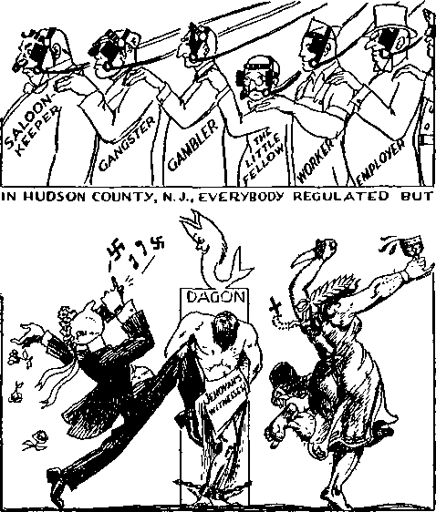
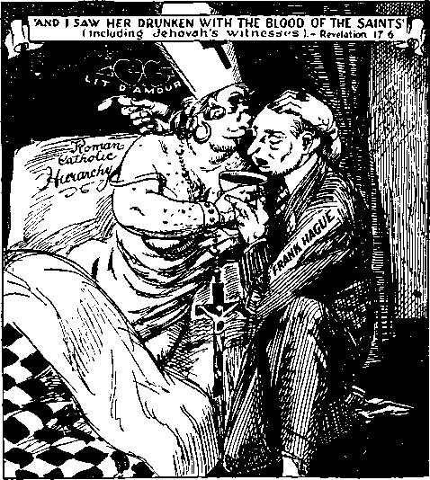
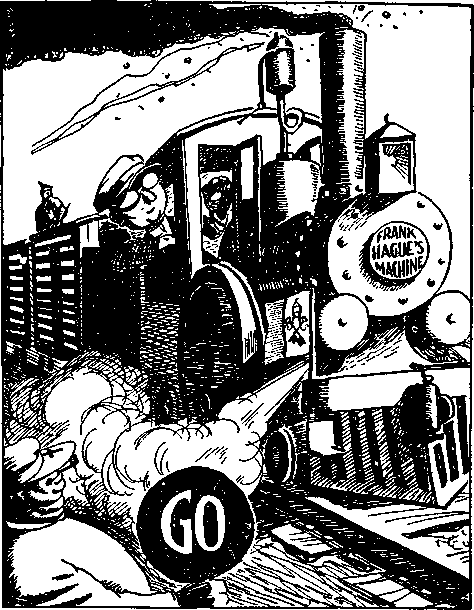
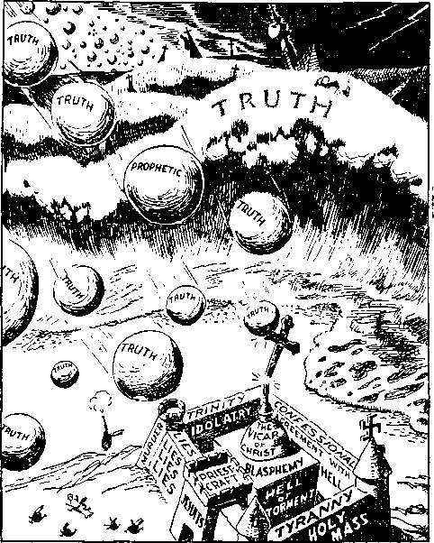
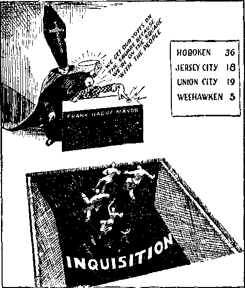
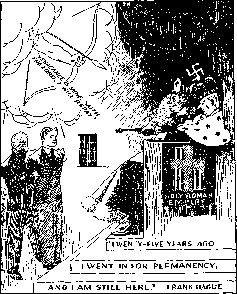
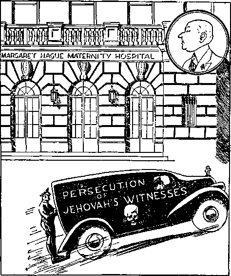
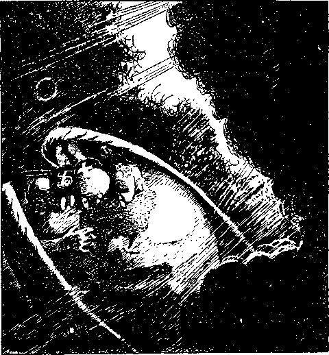
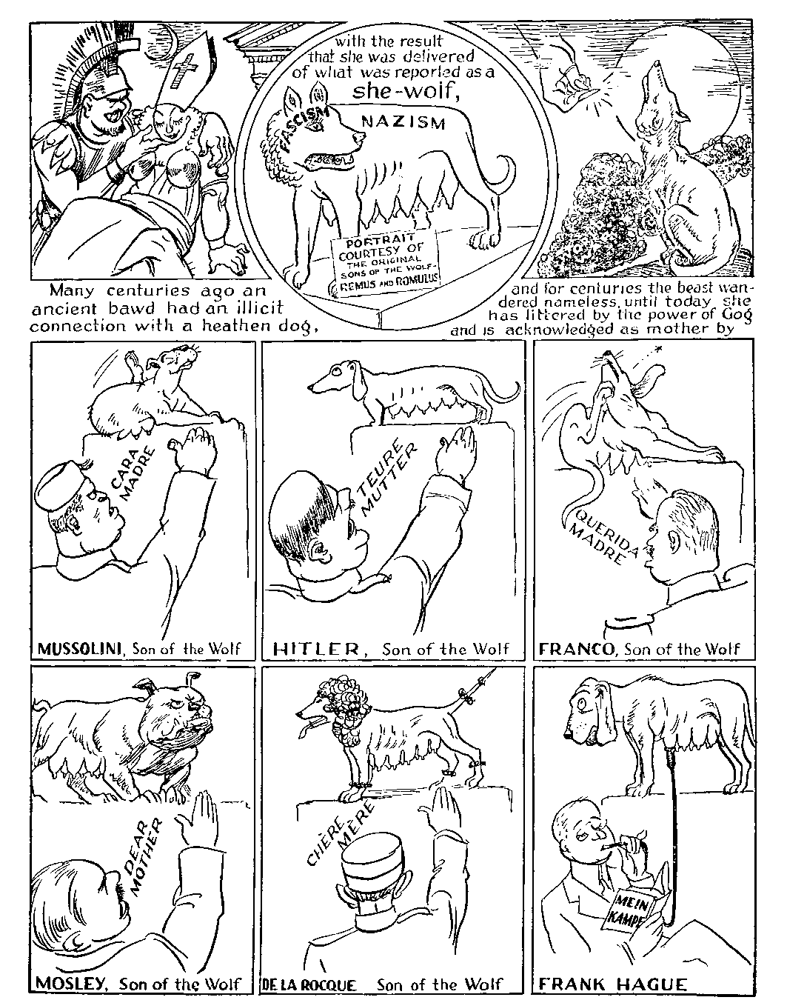

iiiiiiiiiiiiiiiiiiiiiiiiiiiiiiiiiiiiiimiiiiiiiiiiiiiiiiiiiiiiiiiiiiiiiniiiiii
in this issue
iiiiiiiiiiiiiiiiiiiiiiiiiiiiiiiiiiiiiiiiiiiiiiiiiiiiiiiiiiiiiiiiiiiiiiiiiiiiiiii
every other WEDNESDAY
five cents a copy one dollar a year Canada & Foreign 1.25
Vol. XVIII-No. 448 November 18, 1936
•eXe)**
•• • I— । ■ I ■ I l» | ,| I II—— »(d>O ••
Assembly of Worshipers
in Newark, N. J. 99
Declaration and Warning 99
Quick Responses of Honest Hearts 101
Real Americans Deeply Interested 101 Introducing Hague the Hypocrite 102 Statement of New York American 102
Mayor Hague a
Trying to Be Outwardly
“Sounding Brass and a Tinkling
Roman Hierarchy Responsible
Hierarchy Agents at Jersey City 109
The Issue—The Right to Worship
Cafeteria and Other Interior
Communists and
Was the Gentleman
Sioux Center (Iowa)
Welcomes You—and How! 126
Public Notice of
Drawings and Cartoons
“Regardless of all persecution we will
continue to serve Jehovah God ...” 99 Think hard, Samuel. Choose;
Frankie says he doesn’t drink (?).
i l The hail shall sweep away the
“An hypocrite with his mouth
“The shepherds shall have no way ...” Ill Mother’s Day
Published every other Wednesday by
GOLDEN AGE PUBLISHING COMPANY, INC.
117 Adams Street, Brooklyn, N. Y„ U. S. A.
Clayton J. Woodworth President Nathan H. Knorr Vice President
Charles E. Wagner Secretary and Treasurer
FIVE CENTS A COPY
?1 a year, United States ; $1.25 to Canada and all other countries.
Notice io Subscribers
Remittances : For your own safety, remit by postal or express money order. When com or currency is lost in the ordinary mails, there is no redress. Remittances from countries other than those named below may be made to the Brooklyn office, but only by international postal money order.
Receipt of a new or renewal subscription will be acknowledged only when requested. Notice of expiration is sent with the journal one month before subscription expires. Please renew promptly to avoid loss of copies.
Send change of address direct to us rather than to the post office. Your request should reach us at least two weeks before the date of issi with which it is to take effect. Send your old as well as the new address. Copies will not be forwarded by the post office to your new address unless extra postage is provided by you.
Published also in Bohemian, Danish, Dutch, Finnish, French. German, Greek, Japanese, Norwegian, Polish, Spanish, Swedish.
Offices for Other Countries
British 34 Craven Terrace, London. W. 2, England
Canadian. 40 Irwin Avenue, Toronto 5. Ontario, Canada
Australasian 7 Beresford Road, Strathfleld, N. S. W., Australia
South African Boston House, Cape Town, South Africa
Entered as second-class matter at Brooklyn, N. Y.» under the Act of March 3, 1879.
.---—---—---
Volume XVIII Brooklyn, N.Y., Wednesday, November 18, 1936 Number 448
Assembly of Worshipers in Newark, New Jersey
THERE will be some disappointment to the readers of this issue that Judge Rutherford’s lecture on “Armageddon, the Greatest Battle of All Time”, delivered by him in person in the Sussex Avenue Armory, at Newark, N. J., Sunday, October 18, 1936, is not included. It is promised for the next number.
But there is plenty of interesting material in this issue, including not only a complete story of the convention, of which the “Armageddon” address was the outstanding feature, but also of that paragon of hypocrisy in Hudson county, New Jersey, who at present is being pilloried in the public press for the registration frauds committed in his interest.
"Regardless of all persecution we will continue to worship Jehovah God ...”
The brazen audacity of the Hague gang is something new. Thousands of false registrations, some of them youths of nineteen years of age, show the determination of this tool of the Roman Catholic Hierarchy to hold and extend illegal political control in New Jersey until liberty has entirely ceased. What the Jesuits have done in Italy, Austria, Germany, and are trying to do in Spain, they also purpose, as rapidly as possible, to do in New Jersey and all over the country.
Judge Rutherford's lecture (interrupted repeatedly by applause tremendous in volume) admittedly scorned New Jersey’s infamous Nazi law depriving Americans of free speech in the worst-governed state in the Union, but it breathes such a spirit of wisdom and kindness that at its close none dared to interfere, despite the fact that within the 48 hours just preceding more than a hundred of Jehovah’s witnesses had been imprisoned for exercising their God-given rights in New Jersey.
Cablegrams and telegrams from London and Bristol, England; Dover, New Hampshire ; Lynn, Massachusetts ; Chicago, Illinois ; Altus and Tulsa, Oklahoma, and Portland, Oregon, conveyed greetings to Judge Rutherford as he stepped on the platform. The cable from London Bethel assured him in the language of Psalm 121:7, “[Jehovah] shall preserve thee from all evil; he shall preserve thy soul”; and as far as the Newark assembly was concerned the text was prophetic.
An important feature of the Newark assembly was the following, unanimously adopted by the 12,000 people present at the conclusion of Judge Rutherford’s address:
DECLARATION AND WARNING
This company of Christian people, assembled in convention at Newark, New Jersey, give thanks to Almighty God, whose name alone is Jehovah, for the privilege of serving Him and His kingdom. We declare as follows:
Because we have devoted ourselves to the service of Jehovah God and His kingdom under Christ, we, by His favor and appointment, are witnesses for Jehovah.—Isaiah 43:10-12; 61:1, 2.
The law of Jehovah God is supreme, and should be obeyed by all persons, and must be obeyed by those persons who have covenanted to do His will. When the law of man is in conflict with God’s law wre must and will obey God’s law rather than man’s law. In obedience to God’s law, as set forth in Ezekiel 33 and other prophecies of the Scriptures, we sound His warning that God will destroy all who willfully violate His law and who oppose His kingdom.
The kingdom of God under Christ is at hand, and as Christians and servants of Jehovah we declare our unqualified allegiance to Him and His kingdom. The time for the execution of Jehovah’s judgments draws nigh.
Satan is man’s worst enemy, and by means of fraud and deceit Satan is attempting to turn all the people against God and thereby bring about their destruction. Satan employs religion to deceive persons who are sincere. Religion is a form of worship based upon the traditions of men. Christianity is the true worship of Almighty God by serving Him in obedience to His commandments. There are many religions. There is but one Christianity. A knowledge of the teachings of the Bible is therefore of vital importance to all who will gain everlasting life.
In fulfillment of Jehovah’s prophecy there has arisen in the earth a powerful religious organization which is wrongfully called a “Christian” organization. That organization is not only religious, but also political and commercial, and is Satan’s chief visible instrument employed and used to rule the world and to keep the people in ignorance and in subjection to selfish men. That religious organization designates itself as the “Hierarchy of the Catholic Church” and names the millions of sincere persons who are supporters of that organization as the “Catholic population”, but which persons are not members of the Catholic Church. The Hierarchy is composed of a few men, the controlling number of whom are citizens of Italy, but who rule the masses of sincere persons called the “Catholic population” who reside in every part of the earth. The “Hierarchy” is against God and His kingdom under Christ, and at the same time claims the right to rule the world in the name of Christ, thereby deceiving multitudes of good persons who are sincere supporters of the Catholic Church. Those who compose the Catholic Church are the men of the Hierarchy, and other priests, some of which priests are unduly favored, while many other priests are mere menial servants of the Hierarchy and compelled to do the bidding of the Hierarchy.
The Scriptures declare that all persons who by any means oppose Jehovah God and Christ Jesus are wicked and that in due time 'all the wicked God will destroy ’.—Psalm 145: 20.
We call all the sincere people of the earth, including Catholics, Protestants, Jews and Gentiles, to witness that in Germany the true worshipers of Almighty God are cruelly and fiendishly persecuted, and many of them killed, and that such persecution is done by religionists who have forgotten God and who follow the teachings of men. It is well known and generally conceded that the Hitler government and the Hierarchy, that rules the Catholic population, are in full accord. Furthermore we call all good persons to witness that within New Jersey religionists, led by the Roman Catholic Hierarchy, have indulged in and continue to indulge in the cruel persecution and punishment of true Christians, merely because such Christians declare the truth of God’s Word and carry God’s message to the people in obedience to Jehovah’s commandments.
We vigorously protest against the cruel persecution of Jehovah’s witnesses by religionists, and we denounce as cruelly wicked the persecution of all persons because of their faith or belief. Regardless of all persecution we will continue to serve Jehovah God, relying upon His promise that in due time He will duly recompense the wicked by completely destroying them. Jesus Christ, as Jehovah’s chief officer, says to those who persecute His followers: ‘Inasmuch as ye have done it unto the least of these my brethren, ye have done it unto me. . . . Depart from me, ye cursed, into everlasting fire prepared for the Devil and his messengers. These shall go into everlasting destruction. ’—Matthew 25.
The indisputable facts show that the world’s greatest tribulation is at the door and that there is only one way of escape. In obedience to Jehovah’s commandment we warn all persons, without regard to religion, race or color, that their only hope is in the kingdom of God under Christ. All who would live must take their stand firmly on the side of Jehovah God and His King, Christ Jesus, and give heed to the words of Jehovah, to wit: ‘Behold my servant [Christ Jesus] ; He shall judge the nations, and in His name shall the nations hope.’ (Matthew 12:18-21) Therefore the people are warned that they must no longer rely upon and give support to religionists, but that they must rely upon Jehovah God’s commandments and must find protection and salvation only by and through the kingdom of God under Christ.
We have no desire to influence the political affairs of this world, but in obedience to God’s commandment we must sound His warning, that the people may be informed and may intelligently choose whom they will serve.
We send loving greetings to our persecuted brethren and bid them be of good courage and to remember the words of our Lord: “Shall not God avenge his own elect? ... He will avenge them speedily” (Luke 18:7,8) ; and, further, to give heed to the words of the Lord Jesus addressed to His faithful servants: ‘‘Be thou faithful unto death, and I will give thee the crown of life.” Blessed is the lot of those who are permitted to endure all manner of suffering for the sake of the name of Jehovah and His kingdom under Christ. (Matthew 5:10-12) The everlasting peace, joy and life of the people is centered in the great Prince of Peace, whose government is at the door and which will be administered in full righteousness and to the good of all obedient ones.—Isaiah 9: 6, 7 ; 32:1.
Resolved, That a copy of this Declaration and Warning be published throughout the earth.
Dated October 18, 1936.
As Judge Rutherford’s address came to an end a young woman in the audience was observed to beat her bosom several times, then tear from it a scapular, throw it upon the floor and stamp upon it.
In another part of the audience a gentleman, speaking with great feeling, said, “Only a former Catholic can appreciate what it means to be liberated from that institution. For years I gave of my earnings to the Hierarchy, only to receive nothing in return ; now I thank the Lord daily for bringing me the truth by
Think hard, Samuel. Choose; for the day has come.
Judge Rutherford.” With that tears came into his eyes and he hastened away.
In another section a rabbi, clothed in clerical garb, listened intently, and at the close said, “What that man said is the truth. I never before heard anything like that. I must have more of it. Where can I get it ? It is certainly worth getting, and I want to have it for myself.”
From Irvington, N. J., a gentleman who declined to give his name called on the telephone and wished to know if any arrests had taken place in his town. Asked his reason for making the inquiry, he responded that he did not wish to be known, but if such arrests had taken place it was his intention to take some food to the witnesses locked up.
A lady approached the bookroom and said, “1 was a Roman Catholic until some days ago when one of your people called at my home and gave me a Golden Age which exposes the Roman Catholic Church. I read it, together with Riches and Light One and Two, which I obtained at the same time, and I now wish to do something to help along the cause.” With that she obtained 40 copies of The Golden Age and was put in touch with Jehovah’s people in the Newark company of Kingdom publishers.
Real Americans
Deeply Interested
The Newark Committee of the American League Against War and Fascism, by its Executive Secretary, Fred Haug, sent the following dispatch:
The Newark Branch of the American League Against War and Fascism extends its greetings to you at your convention and wishes you success in your fight against the twin evils War and Fascism which are menacing mankind now. These two sources have already taken a heavy toll among all sincere lovers of peace and freedom in Europe, and right here in our own United States, as you well know, there are evidences of their increasing ascendancy. We offer our sincere support to you in your fight for those civil liberties upon which our country was founded, and the maintenance of which will prevent Fascism and keep us out of war.
This was such a good message, from such a representative body of real Americans, that Judge Rutherford, busy though he is, took time to make the following reply, by a letter dated the next day. The Golden Age, favored with a copy, passes it on for all to read:
“The spirit of your telegram is deeply appreciated. The American people are in great danger of losing all liberty of press, liberty of speech and freedom of worship of Almighty God, which they have so long enjoyed. Baek of the entire unholy movement is the Roman Catholic Hierarchy, acting through the secret Jesuit order, which has corrupted officials in every branch of the American government. That gang now has complete control of Germany, where there is no longer any liberty. It rules Austria and Italy, and it is trying to destroy all liberty in Spain, and is fomenting a revolution to begin shortly in France. The power exercised is subtle and deceptive because it hides behind the skirts of religious hypocrisy. It provokes war and revolution to further its schemes of dictatorial control.
I am glad there are some real loyal Americans who avoid the hypocrisy of forced flag-saluting, but who obey every law for which the American flag has stood for many years. If the American people lose liberty and freedom of thought and expression they will quickly plunge into the morass of complete despair. Such dictators as Hague of New Jersey is are one of the worst enemies of the American people. He has no conscience and blindly carries out the orders of the wicked Jesuits, who have been a menace to human peace and liberty for many centuries.
Please be assured of my appreciation of your kind expression, and of your fight to maintain what has been dear to the American citizens for many years. The work of the American League Against War and Fascism is a noble movement in behalf of the people.
Introducing Hague the Hypocrite
Inasmuch as in the foregoing letter Judge Rutherford expressed his opinion of the activities of Frank Hague, there is reproduced below something of this man's record as it appears in The Golden Age No. 439. This is quite appropriate, for 100,000 copies of that issue were circulated in northern New Jersey during the three days of the Newark assembly of Kingdom publishers and produced considerable warmth in Hudson county, in which county Hague himself is ‘king over all’. The size of type is reduced to suit present needs:
Frank Hague, Knight of Columbus, Roman Catholic, son of John D. and Margaret (Fagen) Hague, received in private audience by Pope Pius XI, on July 11, 1933, is the acknowledged dictator of New Jersey, but operating much more cleverly than either Mussolini or Hitler, under secrecy, and with an efficiency that taxes the imagination.
In its issue of April 4, 1936, the New York American, after admitting the fact that Frank Hague is the acknowledged Democratic boss of a Republican state,
FRANK HAGUE AND THE ROMAN CATHOLIC HIERARCHY —
and that both the governor and the Legislature arc under his control, made the following biting comment:
And so we have the putrid picture—the New Jersey Government, in and behind the throne, not only discrediting Jersey justice but making American justice a laughingstock throughout the world. Every country, civilized or savage, can point with scorn to America as the breeding place of criminals where crime, native or alien, flourishes under governmental guardianship and where only honest people and decent citizens are without the governmental protection they deserve. Jersey justice is a discredit to democracy, a disgrace to America. Jersey politics is a stench in the nostrils of the decent citizenry of the United States.
The Hudson Neivs, 703 Bergenline Ave., Union City, N. J., in an editorial in its April (1936) issue, remarked on the singular aspects of
the Hague Democratic organization, that is sufficiently affluent to support at fat salaries 54 clergymen, more than £00 doctors, more than 500 lawyers and numerous otheis who perform no service.
Making Politics Pay
Last year, June 14,1935, the same publication above referred to, in a blistering summary of the control now exercised by the Hague machine, says in effect that this possible and probable tool of the Roman Catholic Hierarchy in the sovereign state of New Jersey has become so “prosperous” on a $6,000 salary that he travels all over the world, owns and operates a $16,000 Duesenberg limousine (the chauffeur of which is a city-paid employee of Jersey City), has a million-dollar mansion at Deal Beach, N. J., and elegant apartments at the Waldorf Astoria hotel, New York city, and at The Duncan, in Jersey City.
The same authority declares that Frank Hague dictates the government and industry of New Jersey and of most of its subdivisions; that federal offices, state courts, criminal machinery, professions, state departments, county and municipal governments, the press and gambling are largely if not altogether in his hands.
Assemblyman Theron McCampbell, in the state house at Trenton, declared before his fellow legislators that New Jersey is the rottenest state in the United States. He was defeated for re-election. Current rumors are that all the vast official personnel under Hague’s dictation must contribute a percentage of their official income to the maintenance of the machine, to keep their jobs.
In New Jersey even Franklin D. Roosevelt is not above currying the favor of the “mighty” Hague. What wonder, then, that Jehovah’s witnesses, who will curry favor from no one on earth, and are interested only in what the great Jehovah God thinks of them, have found New Jersey a battlefield in which, while seeking the honor of God’s name, and the benefit of the citizens of the state, they have been desperately wounded, ambushed and betrayed.
Hague is the man that could stop the persecution of Jehovah’s witnesses in New Jersey at the word of command, but for Roman Catholic reasons, and not at all for American reasons, he desires that the persecutions go on.
The “sober attire and clerical collar” of Mr. Hague are no guarantee of either honesty or sincerity. The Lord Jesus frequently and severely reproved outward evidences of assumed “religion”, saying to His followers, “Take heed that ye do not your [righteous acts] before men, to be seen of them.” (Matthew 6:1) Mayor Hague is closely associated with the Roman Catholic Hierarchy, the spokesmen for which have repeatedly and viciously stated that Judge Rutherford “has been denied the right to broadcast because of assertions he has made over the air regarding the Catholic church”. Of what advantage is it to any man to don sober attire and a clerical collar only to become a companion of men like John F. Daniels, editor of Wisdom, who broadcast that lie for the Roman Hierarchy over WLWL?
It is claimed for Mayor Hague that he is neither a drinker nor a smoker. That is claimed also for Hitler. But Hitler is a murderer. And Mayor Hague is intimately connected with that great “religious organization” which has not hesitated to commit murder in its most terrible form in order to gain its ends. Not only has “Father” Harney of WLWL openly admitted the desire of the Roman Hierarchy to murder those who disagree with it, but this is the plain teaching of the “Church” itself, confirmed by the public utterances of twenty-four popes. Mayor Hague will not smoke or drink. “Thou hypocrite, first cast out the beam out of thine own eye; and then shalt thou see clearly to cast out the mote out of thy brother’s eye.”—Matthew 7: 5.
It is claimed for Mayor Hague’s administration that Jersey City has not known a gang since 1918. When Maria Monk wrote her book telling about the tunnels connecting convents and priests’ houses she was vilified; but when the St. Lawrence river overflowed, causing the inundation of the convent of Notre Dame, the skeletons of about one thousand infants were found in the lime pits; and only the other day, in East Boston, a thief was arrested in the tunnel leading from the church to the convent. Is Mayor Hague sure of his ground that there are no gangsters in Jersey City? Religious gangsters are the worst of all. “They profess that they know God; but in works they deny him, being abominable, and disobedient, and unto every good work reprobate.”—Titus 1:16.
Mayor Hague boasts that whereas Jersey City once sent 500 youngsters away every year to correctional institutions, today the number is
P.S. Frankie says he doesn’t drink (!)•
only 15 or 20. This is good work. But does Mayor Hague realize that the Catholic World advocates that only a few should be well educated, and assumes that it would be better if the great majority were unable to read and write? God’s prophet says, “My people are destroyed for lack of knowledge.” The real reason why the Roman Catholic Hierarchy wants few people to be educated is to keep its works of iniquity covered. “Woe unto them that seek deep to hide their counsel from [Jehovah], and their works are in the dark, and they say, Who seeth us ? and who knoweth us?” (Isaiah 29:15) “Woe unto you, scribes and Pharisees, hypocrites! for ye are like unto whited sepulchres, which indeed appear beautiful outward, but are within full of dead men’s bones, and of all uncleanness. Even so ye also outwardly appear righteous unto men, but within ye are full of hypocrisy and iniquity.”—Matthew 23: 27, 28.
“No racketeering,” is one of Mayor Hague’s slogans; but the two greatest rackets are (1) the claim of the Roman Catholic Hierarchy that they have the power to bribe Almighty God to remit punishments which He would otherwise enforce, and (2) the international murderers’ racket called “war”. In the rape of Ethiopia the bishops of Italy and, indeed, the entire Roman Catholic clergy of that country invoked the blessing of God on the Italian troops and prayed constantly for victory. “Woe unto you, scribes and Pharisees, hypocrites! for ye pay tithe of mint, and anise, and cummin, and have omitted the weightier matters of the law, judgment, mercy, and faith.”—Matthew 23: 23.
Mayor Hague was once an ordinary policeman, and is still interested in that pastime. He states that every home in Jersey City may have police officials on hand within three minutes of call. However, that does not necessarily mean a well-governed city. It all depends on whether the police, when summoned, obey the principles of the higher law of the land or obey the will of the Roman Catholic Hierarchy. In The Belief of Catholics the “Rev. Fr.” Ronald Knox bluntly states that “a body of Catholic patriots, entrusted with the government of a Catholic state, will not shrink from repressive measures in order to secure domination of Catholic principles among their fellow countrymen”. That is exactly what Mayor Hague’s police force in Jersey City and in Hudson county is engaged in. “ Woe unto you, scribes and Pharisees, hypocrites ! because ye build the tombs of the prophets, and garnish the sepulchres of the righteous, and say, If we had been in the days of our fathers, we would not have been partakers with them in the blood of the prophets. Wherefore ye be witnesses unto yourselves, that ye are the children of them which killed the prophets. Fill ye up then the measure of your fathers. Ye serpents, ye generation of vipers! how can ye escape the damnation of hell ?”—Matthew 23: 29-33.
Pool rooms and dance halls in Jersey City are strictly regulated and closed at midnight, according to the Hague administration. But worse things can happen to a city than to have its citizens on the streets after midnight. Thus, in Cincinnati, the Roman Catholic archbishop, J. T. McNicholas, as the “ecclesiastical authority” of the community, periodically calls upon the mayor, the object, of course, being to gradually convey the impression that his imaginary “authority” is the superior authority of the two. Such presumption is directly contrary to the best interests of Cincinnati, and of every American city where a similar custom prevails. It is, in fact, an act of villainy. “For the vile person will speak villany, and his heart will work iniquity, to practice hypocrisy, and to utter error against [Jehovah], to make empty the soul of the hungry, and he will cause the drink of the thirsty to fail.”—Isaiah 32: 6.
In Jersey City the dance halls arc closed all day Sunday. O.K. That means that many young people “go to church”. But it means much more; i.e., the priests at “mass” get the money that otherwise might go to the dance halls. Most certainly one outstanding reason why the Roman Catholic Hierarchy does not wish Jehovah’s kingdom publishers to visit the people on Sunday is fear of loss of revenue. But to deny the people the truths of the Bible and explanations thereof is “to make empty the soul of the hungry”; therefore murder. A man may be a great stickler for Sunday observance and yet not love God. “If a man say, I love God, and hate th his brother, he is a liar.”—1 John 4: 20.
“And the ruler of the synagogue answered with indignation, because that Jesus had healed on the sabbath day, and said unto the people, There are six days in which men ought to work: in them therefore come and be healed, and not on the sabbath day. The Lord then answered him, and said, Thou hypocrite! doth not each one of you on the sabbath loose his ox or his ass from the stall, and lead him away to watering? And ought not this woman, being a daughter of Abraham, whom Satan hath bound, lo, these eighteen years, be loosed from this bond on the sabbath day?”—Luke 13:14-10.
It is no doubt true that Hague’s district workers know every man, woman and child in every block in town; but it is also true that this supervision is so close that the people are actually being deprived of the bread of life. Thus those who visited Hoboken and were not arrested testified that they had never, anywhere, witnessed such eagerness on the part of the people to obtain Bible study helps offered by Jehovah’s witnesses from house to house.
An efficient district worker for the Hague administration might be a blessing or a curse. “An hypocrite with his mouth destroyeth his neighbour.” (Proverbs 11:9) "Woe unto you, scribes and Pharisees, hypocrites! for ye make clean the outside of the cup and of the platter, but within they are full of extortion and excess.”—Matthew 23:25.
In Jersey City a district worker for the Hague administration is supposed to be on the spot if there is trouble with the landlord or sickness in the house. But suppose Hague's Roman Catholic administration should really become permanent, the same thing would happen in Jersey City that happened in Mexico and Spain. Four-fifths of all the property in the city would fall into the hands of the Hierarchy and the people be left stripped and without any knowledge of God’s kingdom. “But woe unto you, scribes and Pharisees, hypocrites! for ye shut up the kingdom of heaven against men : for ye neither go in yourselves, neither suffer ye them that are entering to go in.”—Matthew 23:13.
If the father or son is out of a job, the district worker of the Hague administration is supposed to help him get one. Yet the Hague administration does not at all hesitate to throw more than a hundred of Jehovah’s witnesses into prison for thirty days for trying to help residents of Jersey City and Hudson county to understand the Bible, well knowing that the likelihood would naturally be that every one of these persecuted witnesses would lose their jobs. What possible consistency is there in helping one person into a job and throwing a hundred out of a job? Such is gross wickedness, and “the sacrifice of the wicked is abomination: how much more, when he bringeth it with a wicked mind!” (Proverbs 21:27) “Then shall he say also unto them on the left hand, Depart from me, ye cursed, into everlasting fire, prepared for the devil and his angels: for I was an hungred, and ye gave me no meat: I was thirsty, and ye gave me no drink: I was a stranger, and ye took me not in: naked, and ye clothed me not: sick, and in prison, and ye visited me not.”— Matthew 25:41-43.
In Jersey City, so it is said, there is no visible evidence of commercialized vice. Yet in that city the Hague administration gladly imprisons beautiful, refined and lovable Christian women, to be companions for a month of Roman Catholic whores that are found in every seaport city of the world. Can even any honest but misguided Catholic person justify such a course? The apostle warned the people long ago that the Devil would appear as an angel of light. Political bosses usually indulge in outwardly unrighteous things. Hague follows a different course. But though clean outwardly, his attitude toward God’s people shows that within he is ‘full of corruption and dead men’s bones’. In the book of Job Elihu expressed the desire “that the hypocrite reign not, lest the people be ensnared”.—Job 34:30.
Women are not found in Jersey City drinking places, and a violation of the law is punished with a permanent padlock. That is as it should be; and it also conveys an impression of interest in those that need protection. But does Mayor Hague know that in Roman Catholic orphanages all over the world the children are treated worse than slaves? The surest and best way to help women and children is to let the light of the Bible shine, and this the mayor is preventing. Efforts at outward righteousness avail nothing. “The sacrifice of the wicked is abomination; how much more, when he bringeth it with a wicked mind!”—Proverbs 21: 27.
The cry of the Hague organization is “No quarter”; and that is the cry of the Roman Catholic organization in every part of the earth where they dare to raise it. As late as the year 1900 "Father” Marianns de Luca, professor of
Portrait of a famous railroader, railroading his quota of Jehovah’s witnesses to jail.
canon law in the Papal university at Rome, announced that “killing heretics is the only efficient remedy”; and ten years later Cardinal Lepicier reiterated that the Roman Hierarchy has that right. These views of Lepicier were endorsed by the Vatican with its warm approval. Manifestly they would have the approval of Mayor Hague. “O generation of vipers, who hath warned you to flee from the wrath to come [Armageddon] ? Bring forth therefore fruits meet for repentance.”—Matthew 3: 7,8.
Mayor Hague well knows that the American plan of government is by party rule, and that to destroy such rule and replace it by the rule of the Roman Catholic Hierarchy is to destroy the country, yet he shamelessly admits that, though himself a Democrat, he does not hesitate to control the Republican primaries by invading them with his henchmen. The Jesuits claim to be great American patriots, but do not hesitate to undermine the Constitution itself, as was done at St. Louis University by Reverend Edward Dowling, where he ridiculed it openly. The effect of these Roman Catholic activities is to corrupt and destroy politicians, and especially judges, who, to please the Hierarchy and to keep their jobs, make decisions which they know are directly contrary to the evidence and the law. “The heads thereof judge for reward, and the priests thereof teach for hire, and the prophets thereof divine for money; yet will they lean upon [Jehovah], and say, Is not [Jehovah] among us ? none evil can come upon us.”—Micah 3:11.
A businessman of Philadelphia, Pa., honestly concerned for Mayor Hague’s eternal welfare, wrote him the following wise and kindly letter on his return from the assembly of the worshipers of Almighty God at Newark:
Honored Sir: It has come to my attention that you have permitted and are permitting within your jurisdiction the persecution of harmless men and women who are intent only on worshiping Almighty God according to the dictates of their own conscience; and that public officials under you are cruelly and illegally, and with malicious intent, burdening these same people with imprisonments and fines, that they are harried and hounded by your strong-arm squads, to the utter disgust of all true Americans. I am referring to the inhuman treatment accorded Jehovah’s witnesses in Hudson county.
Your duty as an American citizen, if you are one, is to obey the law; your duty as mayor is to enforce it; and what law is more important than the U. S. Constitution provision of religious freedom for all, as is also guaranteed by the New Jersey Constitution? It is not the desire of the American people to be cruelly coerced into supporting a system foreign to this soil, nor will they condone your traitorous action in obeying the voice of a foreign power.
There is no doubt that the record of these men and women who are so wretchedly ill-treated in your neighborhood is proof to anyone who will examine it that they are sent of Almighty God to do this work, and it is a timely labor for you to examine it, and your own conscience; for if you fight against them you will find yourself fighting against God.
Do not permit the apparent security of your present situation to deceive you into thinking you are safe and beyond the reach of the anger of Almighty God, but rather be in haste to make peace, for His arm is not shortened, nor is He sleeping. Ignore the counsel of wicked religionists who have evidently betrayed you into the hands of Satan, their father, and seek justice and mercy, for Jehovah is a God quick to accept repentance of evildoers.
God will hold Mayor Hague responsible for the arrests which he could have prevented in northern New Jersey on the occasion of the assembly of Christians worshiping Almighty God held in the Newark Armory, October 16-18, 1936, because every chief of police in the 200 cities and towns visited by the Kingdom publishers during the time of the assembly received notice that the assembly would be held.
The notice sent to the police chiefs drew attention to the fact that in accordance with custom at such conventions and in obedience to the mandate of Jehovah God to preach the gospel the conventioners would call on the citizens of northeastern New Jersey to present to them in printed form the good tidings that the kingdom of Almighty God is at hand, which will soon bring the blessings of everlasting life on earth under perfect conditions to those that come into harmony with the Prince of Peace.
Such notice also explained the hatred of extreme religionists for work of this kind, and it was respectfully requested that the police departments, as officers of the law, co-operate with these Christian people in the performance of their privileges and duties. Every city under the control of Mayor Hague received this kindly and respectfully worded notice.
Centuries of experience have trained the Roman Catholic Hierarchy how to successfully put upon such men as Mayor Hague the public blame for their acts of intolerance, and, though Mayor Hague cannot evade his responsibilities, it is the Roman Catholic Hierarchy that was to blame for the arrests October 16-18.
The scribes and Pharisees were the immediate cause of Jesus’ death. Jesus said that what was done to Him represented what would be done to His followers. ‘If they have hated me they will also hate you.’ ‘Yea, the time will come when he that killeth you will think that he doeth God service.’ The Roman Hierarchy, the modern scribes and Pharisees, plan the death of Jehovah’s witnesses, the members of Jesus’ body. Everything shows it and proves it.
When people die, those who have killed them sometimes erect monuments over their dead bodies. The Lord mentions this. It is therefore significant that just at this time, when these murders are projected, the Roman Hierarchy is planning a huge image of Christ in the city of Washington, the national capital. The professed reason for the erection of the image, which is sponsored by three Roman Catholic archbishops, six Roman Catholic bishops, four Roman Catholic editors, and various politicians and others under Roman Catholic control, is;
A monument to the Nazarene should stand on the banks of the Potomac as a reminder to mankind that the American people wish to abide by government and law which are predicated upon the principles laid down by the Savior.
Actually, the purpose of the monument is to commemorate the proposed destruction of God's remnant in the earth. As a bait for Protestants, the advertisement of the proposed image hypocritically says, “The Pilgrims came here seeking freedom of thought in matters social and religious.” Notice how carefully every papist avoids saying “freedom of speech” or “freedom of pbess”. Who but a fool would suppose that anybody had to go anywhere to seek freedom of thought ?
But the papist does not dare commit himself to freedom of speech or of the press, for he well knows that the Roman Catholic Hierarchy has always been and is now bitterly opposed to these expressions of liberty, and that many of the popes, 24 of them at least, openly advocated the Inquisition to prevent that very thing.
“The hail shall sweep away the refuge of lies, and the waters shall overflow the hiding place. ’ ’—Isaiah 28: 17.
Out of 12,000 visitors to the Newark convention uniformed officers of certain cities selected 114, some of them maidens of tender years. In certain places the incarcerations were brief and were quickly followed by release, on one pretext or another, so that nothing serious stands against the records of the following cities, where arrests occurred of the number specified:
Middlesex Montclair Orange Prospect Park
1
2
13
1
The really serious situation arose in Hudson county, New Jersey, which is directly under the control of Frank Hague. Eighteen were arrested in Jersey City, 36 in Hoboken, 19 in Union City, and 5 in Weehawken. Two were arrested in Harrison. Nearly all the arrests were of visitors to the state of New Jersey.
*'An hypocrite with his mouth destroyeth his neighbour.” ■—Proverbs 11: 9.
Without doubt these arrests were made at the instigation and behest of religious organizations who fear and hate the truth as given by Jehovah God in His Word, for the reason that it exposes and brings to light their own shameful hypocrisies and corrupt acts.
The fact that police officers and magistrates of thirteen municipalities would participate in such vicious and unprincipled religious persecution betrays the dominance of the evil ecclesiastical organization that has ruined Europe and is now seeking the ruin of the world.
The Roman Catholic Hierarchy is in a conspiracy to suppress freedom of speech, freedom of radio, freedom of press and everything that pertains to the truth. In order to prevent the people from understanding the Bible the Hierarchy is inducing officials to arrest and imprison those who teach the truth of the Bible. Police officers are forced to support this unholy religious conspiracy in order to hold their jobs. Many of these officers regard the action of the persecution of Christians as an outrage, but they are unable to resist the unrighteous influence.
Members of the Hierarchy, acting through the Jesuit dictator Hague of Jersey City, bring pressure to bear upon the police magistrates and other officials to do this unrighteous work which is a betrayal of the people, inhuman, and a shame and disgrace to the great state of New Jersey. The honest Catholics, Protestants and Jews and nonbelievers of New Jersey do not support any such coercive methods as Hague and his gang use. It is time for them to rise up and vigorously protest against the highhanded, dictatorial methods.
It is quite to the point that out of two hundred municipalities notified of the forthcoming visits by Jehovah’s witnesses only one official, John A. Reynolds, mayor and chairman of police committee, borough of East Newark, Hudson county, New Jersey, made any protest or indicated any hostility. Failing to put the word “witnesses” in the plural, and misspelling the word “pamphlets”, this gentleman, under date of October 14, hastened to say,
The Chief of Police and members of the Police Department have been instructed to stop your witness who come in East Newark, N. J. I forbid any exhibiting of phamplets, booklets or magazines or any sound machines in the Borough.
The witnesses went in and covered the town. There were no arrests, and the big bluff brought forth wind only. Mr. Reynolds just wanted to show that he is loyal to Mayor Hague, the boss of Hudson county, as Mayor Hague is loyal to the Roman Catholic Hierarchy, as the Roman Hierarchy is loyal to the pope, and as the pope is loyal to the Devil.
Next cometh Hoboken, the place where the judge who is to try Jehovah’s witnesses first asks the political henchmen how much he shall fine these witnesses of the Most High God. The trials were a disgrace to any community claiming to be civilized. The judge, as usual in Hudson county, acted as court and prosecutor. Convictions were entered without evidence. A thirtyday sentence was given in one case for declining to testify. Many were sentenced for being in the city with Bible literature in their possession.
Here the Roman Catholic Hierarchy, holding the whip hand, waged a mighty warfare, worthy of its past history. Thirty-six were arrested and held on $100 cash bail from Saturday to Monday for trial. In some cases two charges were filed, to wit: (1) Selling books without a license. (2) Disorderly conduct—refusing to properly account for oneself to an officer. The whole affair was a farce.
The police arrested Jehovah’s witnesses on sight. All they needed to convict them of selling books in Hoboken was evidence that ‘Jehovah’s witness was in town with some books’. They were picked up wherever found, and crowded into prison cells. “Judge” Romano found all “guilty”, regardless of state of evidence; made uniform sentences of $25 fine or thirty days in jail.
On the “disorderly conduct” charge suspended sentence was given in all cases except two. In these two cases the defendants had declined to furnish testimony to the court to convict themselves, so “Judge” Frank Romano sentenced them to an extra thirty days on such charge. The facts concerning the “disorderly conduct” charge are that the defendants, after giving their names and addresses, declined to talk further without their counsel’s being present.
At Jersey City eighteen were arrested and released on their own recognizance for trial Monday morning. Sixteen were tried at the Montgomery Street police court by Judge Anthony Botti, a clerk for Mayor Hague and a good papal child. He orated valiantly in denouncing Jehovah’s witnesses for having the temerity to “preach the gospel” without going to a theological “cemetery” for twelve or fifteen years.
Corporation Counsel Singer claimed the work was political on the ground that it showed up some of the iniquities of Mayor Hague, President Roosevelt and the Democrats. He was particularly incensed over the reference to Mayor Hague in The Golden Age No. 439. He read a portion of the letter to President Roosevelt (in the same issue).
How permanent, Frankie?
The attorney for Jehovah’s people insisted that the entire letter then be read into the record. The court consented. The attorney started in, but the many references to the activities of the Hierarchy caused too much discomfort to the court and he was shut off when about one-third through.
At the opening of the trial Police Chief Walsh made a little speech to the court telling of the defiance of Jehovah’s witnesses against the city laws and insisted they be tried without any consideration and, apparently, without any regard for their rights in court.
Trials were farces. The charges were “distributing circulars”. Four defendants sitting in cars who had not called on a person in the city were fined ten dollars or ten days. Two young men who were working in North Bergen acci-
Of which are you proudest, Frankie?
dentally got over the line and, because they had Bible literature in their car, were arrested and received a ten-day sentence along with the others. Interspersed with the sentences were orations by the court against Jehovah’s witnesses, Judge Rutherford, etc., in violent terms.
Under fire for the first time, five of one company gave a good account of themselves before Judge Anthony Botti, who appeared badly rattled at their unabashedness, as well as their readiness to vindicate Jehovah’s name. Among those arrested was one who had been coming to meetings (in Staten Island) for only six weeks. She did not get home after her arrest until 10:30 Saturday night. Her husband, who up to that time had been indifferent to the Truth, was so indignant over the action of the police that he helped her to get back to the convention early the next morning, and told her if she wanted to go back into the field again to go ahead.
Some of the police have good hearts. One of the Canadian pioneers was held at Communipaw avenue and Lincoln Highway in Jersey City because he did not have his driver’s or car license. He was driving one of the sound cars. His billfold and all credentials were located at the “Lost and Found” department, and a witness from Massachusetts just coming in from his territory offered to drive to the scene. The police station was visited, but no one there knew of any Canadian license car being held. Next the actual location where the car was stopped was visited, and the officer there stated that he had stopped the car but had permitted it to proceed after talking to the driver some, and especially in view of the fact that the driver was very anxious to “hear the judge” and he just didn't have the heart to hold him.
At Lyndhurst one was arrested charged with selling books without a license. The judge was courteous during the trial. He reserved decision to permit a brief to be filed on the invalidity of the ordinance. At the close of the trial he made a speech denouncing Jehovah’s witnesses as intolerant and bigoted, but counsel for Jehovah’s witnesses said he would answer that argument in his brief, to be filed with the court at a later date.
At Middlesex, a Kingdom publisher, of Attleboro, Mass., was arrested. Mrs. Morge, wife of the police commissioner, instigated the arrest. Police Commissioner Morge had previously told her to summon an officer when one of Jehovah's witnesses called. Morge himself has the marks of a “good Romanist” on his face. Recorder Sam Frank and Chief of Police Petty managed the arrest. These gentlemen, being in a hurry to go to a football game, rushed the prisoner to the county jail at New Brunswick, where he was dressed in a uniform, and, after some searching, was finally located by the committee of visitation for the Kingdom publishers.
Said committee of visitation then called on the following officials: Police Commissioner Morge. He was quite peppery; seemed to be grieved against Jehovah’s witnesses. Didn’t know anything about it and wouldn’t do anything.
The town clerk: Furnished a view of the town ordinance, which is anything but a valid document. Informed of the acts of other officials he appeared sympathetic and suggested contacting the mayor, Mr. Leidecker, if no results were secured otherwise.
The mayor, being called upon, listened to the story and suggested calling all parties together. This was done. The mayor, recorder, police commissioner and the visitation committee gathered at the schoolhouse. The matter was discussed thoroughly. The committee informed the officials that they would do anything needful in the way of identification, but would not take a permit as a gift. This appeared satisfactory.
The recorder then stated, “I presume, Mr. Mayor, that this case is to be dismissed. But I am wondering who is to pay the costs of seven dollars.” He suggested the Watch Tower Society pay them. The answer was that the defendant had been unfairly treated and, while Jehovah’s witnesses like to be agreeable, they would not pay one cent of costs.
The mayor said he knew when they were licked; that Jehovah’s witnesses would pay a couple of hundred dollars on a case rather than a few dollars of costs; so they would take care of them. The mayor, though not friendly to the Truth, also said that Jehovah’s witnesses have an absolute right to do the work they are doing, that there is no competition, that the placing of this literature in the hands of the people is not selling books, and that no Roman Catholic will tell him what he may or may not read. A release was secured and the prisoner turned over to the committee.
On Friday an Atlanta colored brother was arrested at Montclair. The authorities wanted him to put up bail of ten dollars; but this was declined. The committee of visitation called on the acting chief of police and tried to persuade him to loose the prisoner; but with no results. The acting chief was informed that the Kingdom publishers were ready for a good fight on the matter if necessary. They held the prisoner all day and over night. The next morning an officer was heard to state, “The city is full of them.” The prisoner was called and informed, “Your attorney evidently is not going to furnish bail for you. We are releasing you now and will come for you when we want you.” One other witness was arrested at Montclair, but was not held.
For some months officials of Orange have tried to act as much like the Devil as possible. They arrested thirteen. Three were sent away with suspended sentences. Ten were released on their own recognizance to return for trial October 22. These defendants were from Michigan, Massachusetts, Washington, D.C., and Pennsylvania. At considerable expense and trouble they kept their promise and appeared for trial on the 22d.
Then without just cause or excuse Judge McHugh and Prosecutor Goldberg adjourned the cases, over their protests, to Wednesday the 28th. He asked no promise of them to return, and did not take them into custody. Therefore on the 28th the defendants stayed at home and let the judge and prosecutor have their own little party without any defendants at hand to oppress. Hope it was a nice party.
At Orange a small boy directed an officer where to find a brother, who was arrested, and a small girl performed the same evil service in bringing about the arrest of a sister. These children, without a doubt, were detailed for this work by some priest.
The town is so completely under the control of the Hierarchy that when the visitation committee returned from police headquarters and attempted to get into their car and drive to the next scene of ignorance and hypocrisy they were stopped and the whole party threatened with arrest. The officer had noticed on the car a sign advertising the Sunday afternoon lecture! When it was explained to him that the committee had but this moment returned from police headquarters, he looked cheap and confused and moved off.
Reading the stories told by those arrested at Orange it is apparent that Jehovah’s witnesses “have had their eyeteeth cut” and, when lied to by detectives, are too clever to believe the yarns
“The shepherds shall have no way to flee, nor the principal of the flock to escape.”—Jeremiah 25: 35.
they are told, which yarns are circulated for the purpose of getting them to cease their work for the Lord. One detective told a group that the attorney for Jehovah’s witnesses had promised that no more work would be done—a lie, of course. At the same place a policeman came by the cell where some of the witnesses were imprisoned, accompanied by a '’plumber”. The ‘■'plumber” turned out to be the clerk of the court. When the officer told this so-called “plumber” who the witnesses were he told them that for $5 they could be bailed out. They only laughed at him. Prosecutor Goldberg said he knew Judge Rutherford when he was on the bench. This also was a lie, all of which is normal in a Rome-controlled city.
At Union City nineteen were arrested, but the trials were postponed for a week.
Weehawken started something new. The defendants were charged with violation of a “Disorderly Persons Act” and it was alleged in the complaint that the defendants
did wander abroad and beg or solicit charity under the pretence of preaching the gospel of God’s kingdom in violation of Section I of an act concerning disorderly persons.
Five were arrested. In order to make a conviction under this charge it would be necessary for the city to prove:
1. That defendants “wandered abroad” and begged or solicited charity.
2. That they pretended to preach the gospel but were not preaching it.
3. That this pretense of preaching the gospel was a subterfuge or fraud to induce people to contribute funds to the defendant.
To “prove” their case the city offered testimony showing that the defendants
delivered copies of The. Golden Age, booklets and Riches. Offered a card with the following statement:
“Would you care to contribute a small amount, say ten or fifteen cents, to help defray the expense of publishing more like literature for the benefit of the people?”
Recorder Abraham Lieberman—who ought to know better—acted as court and prosecutor. He cross-examined defendant’s witnesses and made sport of them. He claimed The Golden Age was political, and would give no consideration to the other literature, Riches, Choosing, etc. His sensibilities were shocked because Frank Hague’s name was mentioned. Weehawken is in Hudson county, and Lieberman is Hague’s man. He sentenced each defendant to thirty days in jail without any alternative of fine. Appeals were taken on these cases because of the unusual issue involved.
Noting that when Paul and Silas were in prison and their feet made fast in the stocks they had no telephone with which to get into communication with their friends on the outside, the convention telephone operator noted the triumphant tones of those brethren of Paul and Silas who were arrested at the Newark convention. There was no complaining, but just a ring of confidence that their God, whom they served, is able through His angels to direct affairs according to His own good purpose. The expression of all, without exception, was that they were happy to be literal prisoners for Christ's sake.
A letter from one of the witnesses sentenced to prison for preaching the gospel showed the happy condition of heart of those behind bars, and anybody with half a head who reads it can see that the holy angels are on the job and that those confined in prison had the very best convention of all.
At nine o'clock each morning, including Friday, there was held an assembly for field service, but the convention officially opened Friday at 3: 00 p.m. Four thousand were in attendance the first day, anxious to have part in the work of the convention.
The songs used were all printed on the programs, a feature very satisfactory.
All of those addressing the convention confined their remarks to the subject matter of The Watchtower, and the organization and policy of the Society pertaining to the service work itself, service instruction. The recent Watchtowers considered were, in the order discussed, October 15, 1936, “Work”; June 15 to August 1 inclusive, “Obadiah”; August 15 to October 1 inclusive, “Gathering the Multitude.”
The conventioners were thrilled as, on Saturday afternoon, Judge Rutherford addressed the convention on the Bible account of Joseph, his family, and the other actors in the prophetic drama. To see their own course outlined in God’s Word, to ascertain Jehovah’s jiurpose toward them and the loving provision Jehovah has made in the Bible for their instruction and welfare, was a blessing beyond words. Many were the expressions from the conventioners that they hoped that in the Lord’s due time the entire drama may be studied by them in The Watchtower.
Widely advertised, enthusiastically announced, eagerly awaited by the convention, the high point of the entire three days was the lecture “Armageddon, the Greatest Battle of All Time”, which lecture Judge Rutherford delivered Sunday afternoon, the 18th. This was broadcast by the Watchtower station, WBBR, and rebroadcast by sound cars.
Before the hour of three the Armory was filled. A vast audience of 12,000 gave close attention to what is probably the most forceful and important message brought to them. The crowd that stood in the auditorium and in the streets outside, where the lecture was heard over sound cars, was three thousand. Everyone could hear, inside and out, and those remaining in the streets stayed in spite of a cold wind, showing they really wanted to hear.
During the praise period on Friday evening and on Saturday evening several pioneers spoke briefly. They were prepared beforehand, and their statements were not those of old-time ‘‘testimony meetings”, but were simple, practical, workable suggestions which can be used to good advantage, not only by other pioneers, but by auxiliaries and company publishers as well. A portion of one of these addresses follows :
I witnessed to the warden of a prison in a southern state. He gave permission to put on a sound-ear program for over 200 convicts, mostly life-termers. He asked me to speak to the convicts for a few minutes until he returned, as he wanted to hear the judge from the sound car. This gave a fine opportunity to explain that “religion” and preaching the gospel are two entirely different things. “Religion” is a racket. All said “Amen”, including two dominies that are in for over ten years for robbery. (They got caught.) The warden told me he only allowed dominies to come there to serve time. He invited me to come back any time and put on the lectures, and eat with the convicts. He feeds them well. Only one has tried to break prison in four years.
I was giving the witness to a clergyman in a large town in Arkansas. He got hot under the collar and said Judge Rutherford had been telling the people the world would come to an end many times since 1914 and nothing has happened yet. I told him he did not know the difference between “the earth” and “the world”. He got mad and tried to get me into trouble with the man next door, who happened to be chief of police. He and his wife were on the porch listening to the loudmouthed “preacher”. When I started for the next door the chief stopped me and asked me what I was selling. I told him “Nothing”, but that I was preaching the gospel of Jehovah’s kingdom. The chief’s wife said, “I have almost all of Judge Rutherford's books. Give me Riches.” Well, the chief gave me permission to put the sound car on right in front of the police station and put on the lecture “Separating the Nations”. Two thousand were present, including all the police officials. Many came up to the sound car and took Riches. The chief then told me to put the lectures on any place I wanted to.
To top the whole thing off the priest came up and asked me how I was getting along with my work; he had heard so much about the sound car. I told him “Fine”, that we had already placed more than 5,000 of the booklets Choosing Riches or Ruin in the hands of the people. I handed him one and asked him to read it. He tipped his hat and left.
A Kansas witness said:
When we received The Watchtower and read of the convention in New Jersey, how our hearts rejoiced that Jehovah had decreed the enemy must be attacked in his own field! Then how joyous we were when the way was provided for us to attend in person as well as spirit the feast that Jehovah had provided!
After the first day spent in service a call for volunteers of 85 carloads was sent out to go into two of the camps that had relentlessly persecuted Jehovah’s witnesses. Well, our spirits were strong, even though our flesh was a little shaky (for you know our state, Kansas, has not entirely surrendered to the entrenched foreign power, Rome, as New Jersey has). Therefore, after preliminary preparations (such as divesting ourselves of the little cash that we had for current expenses—we had to do this; for we were taught by others ’ experiences that it would be confiscated and we would probably have to pay board were we imprisoned and they could catch us with enough money to pay) and all the while praying continually to Jehovah to lead us with His strength, we went to the place where we had been admonished to “count the cost” first.
Even the elements threatened us at this time, but after a terrific downpour it stopped entirely. We immediately hopped out of our ear and went in all directions to our territory assignment and worked very quietly. The Hoboken people, in their peculiar way, took the literature so fast that we were almost out of stock in a brief three-fourths hour of service, and they contributed their little toward the work, some stating they already had some of the literature and were ready for more. We could readily see why the Hierarchy wants this work stopped here. Truth will set these people free.
We then went back to the convention hall and learned that thirty-six of our fellow witnesses had been picked up by the police and were to stand trial in police court on Monday. We had heard so much of the “justice” meted out there that we decided to get some firsthand knowledge of this. Well, we found what railroading in court really means; for the judge showed by his actions that the case was already decided. Every word he uttered showed malice toward God’s faithful people. As I write this I wonder if he will feel so happy when he sees the double returning to him. Fascism is in New Jersey. How soon will it be in all the United States'? The visible part of the beast certainly is pushing ahead, but Jehovah has promised by His sure word the destruction of such.
The service instruction included points contained in the August special Informant, “Jehovah’s Service Organization,” outlining the duties and responsibilities of those in the various branches of the service, pioneers, auxiliaries and company publishers, instruction as to procedure and conduct in the field, especially in troubled areas, and when arrested for preaching the gospel. The address on the latter question now appears in full:
THE ISSUE—THE RIGHT TO WORSHIP GOD
“Thou shalt worship the Lord thy God, and him only shalt thou serve.” (Matthew 4:10) This is the mandate from Almighty God to all those in covenant relationship with Him. It is a command which must be obeyed. There is no alternative. It requires loyalty and faithfulness to worship Jehovah in spirit and in truth. His people will worship Him because they are loyal to Him, and because they are truly faithful.
For sixty centuries Satan, the great adversary of God and man, has endeavored to do away with the true worship of Jehovah. Through deceit and misrepresentation he has caused millions to believe that the worship of God consists in going to church; dropping shekels in the collection box; sprinkling oneself with holy water; prostrating before images; bowing at the right time; kneeling at the right time; keeping awake during the sermon; smiling and looking pious, sweet and holy. This is Baal worship, devil worship, heathen worship. It has spread so widely and is practiced so universally that the average man has not the slightest conception of what constitutes true worship of Almighty God.
Worship and service are practically synonymous. To worship Jehovah means to serve and obey Him unselfishly, and with complete devotion to Him. The purpose of our gathering here in Newark is to give worship and praise to our gracious heavenly Father. As you go from door to door in obedience to the command of God you will be engaged in the actual worship of the Creator. You who worship God in spirit and in truth will not be deceived into false worship through some religious corporation. Neither will you be intimidated by force, threats, coercion, or oppression.
The prophet Daniel was one who worshiped God with a pure heart. He was loyal to God and obeyed His commandments to the best of his ability. He was faithful to Jehovah. He was dependable and could be relied upon to do what God desired. Because of his loyalty and faithfulness he incurred the enmity of the religionists and politicians of his day. They conspired to get him out of the way. They knew that Daniel was loyal and faithful to Jehovah. They knew he would obey the divine law even though the law of the state conflicted therewith. Therefore they framed a statute which would require Daniel to disobey the law of God or be in jeopardy with the state. They secured passage of this statute and believed they had Daniel where he would be eliminated from the scene. Their work was undoubtedly instigated by the Devil. It was one of his many attempts to interfere with the true and sincere worship of God. The issue became clear-cut and sharply defined. Daniel had to relinquish the worship of Jehovah, and worship the god of the satraps, or suffer the penalty of the law.
What should he do ? To disobey the decree of Darius the king meant the loss of everything from a human or material standpoint, It meant the loss of his position. It meant the loss of liberty. It meant the loss of life itself. He stood alone and had no means of relief. He couldn't hire a lawyer and sue out a writ of habeas corpus. He couldn't take an appeal to a higher court. There was only one source of help for him, and that was in the power of Almighty God. In this situation Daniel had io depend entirely on the Lord. There was no other way out.
His course of action is familiar to all. He spurned the law of Darius the Mede. He refused to bow down to any god but the Most High. He didn’t make any fuss about it. He made no boasts or threats of what he would do. He didn’t go into hiding. He went about his business in the usual way, and three times a day publicly worshiped God with his windows open towards Jerusalem. If he had been like some sissies who consider themselves servants of Jehovah he might have compromised by closing his windows, hiding himself, and making it difficult for the opposition to get the evidence against him. But that was not done. Daniel worshiped God openly, fearlessly, and without regard to the spying activities of the princes that were after his lifeblood.
Daniel exhibited loyalty and faithfulness in a manner that must have brought pleasure to the heart of the Creator.
Today you have loyalty and faithfulness similarly demonstrated to men and angels. Daniel illustrated what the servant class would be doing in this day of Jehovah. In this day we have another conspiracy. The modern satraps, “Philistines,” religionists, have gathered and conspired together against the Daniel class. They have decided to eliminate them from the picture of present-day events.
As in the days of Daniel, they have ‘framed mischief by law’. With a couple of centuries of education in religious freedom and freedom of worship behind them, it isn’t very easy to frame legislation that will accomplish the purpose. The modern satraps cannot go to the rulers and say: ‘Just create a law making it obligatory for all people to worship through you.’ That would be a little too raw. More subtle means have to be used, but the effect is the same.
In the United States, where the chief ruler of the land says there is complete freedom of worship, there are at least twelve varieties of laws used specifically to stop the worship of Almighty God by Jehovah’s witnesses. Some of these varieties of laws are:
Canvassing and soliciting ordinances.
Circular distributing ordinances.
Laws regulating soliciting of contributions to charities.
Laws regulating sales and prescribing taxes thereon.
Laws prohibiting begging.
Laws prohibiting trespassing.
Laws prohibiting disorderly conduct.
Laws prohibiting vagrancy.
Laws requiring flag saluting.
Laws prohibiting shocking the susceptibilities of religionists.
Laws punishing contributing to delinquency of minors.
Unwritten laws prohibiting Jehovah’s witnesses from being in town.
With the aid of these commercial statutes the religionists have sent out their pontifical inquisitors to spy on Jehovah’s witnesses and throw them into jail. During the past year 1,149 have been arrested in these United States. And yet the president of this country says there is complete freedom of worship. In this state of New Jersey 189 have had brief stays in prison cells. In addition, mobs have been sent out in some places to assault, beat and choke the Lord’s people, and destroy their property.
There is no need of asking the question, When will the Roman Catholic Inquisition go into action and power? That time is already here. The facts prove conclusively and indisputably that the Roman Catholic Inquisition has been re-established in this country, and is functioning in manner similar to that of the Dark Ages.
Just as Daniel of old remained loyal, true and faithful, so today, those composing the Daniel class are standing firm. They are obeying the mandate to worship God and serve Him only, and all the devils, priests, clergy, bishops, cardinals, popes, magistrates, police and politicians on earth cannot budge them from their position.
You have come to a section of the country where the Inquisitional machine of the Roman Catholic Hierarchy operates at its best. You have come here to engage in the worship of the Most High God, Jehovah. You will engage in such worship in communities where laws have been applied against it. It will be the privilege of some of you to go down into the sombrous depths of Hoboken, that city which is so darkened with corruption and wickedness that it would hardly seem possible that there can be ‘ten righteous men remaining therein’. Some of you will go to the malodorous burg of Secaucus, where the rancid acts of the town board are an abomination to the nostrils. Some of you wdl visit Jersey City, which looks clean on the outside but which within is full of corruption and hypocrisy. Some will go to Orange, where the baleful, barbarous and brutal acts of a Catholic magistrate and his pontifical associates make Sodom and Gomorrah seem pure, guiltless, undefiled and spotless in comparison. Maplewood, Plainfield, Irvington, East Newark, Nutley, Bergenfield and other towns where magistrates, police and mayors have foolishly thought that they could suppress the worship of God will be visited and given opportunity to learn of Jehovah’s gracious provision for all.
Just what the Inquisition will attempt to do to you is not known at this time. They may forbear to fight. They may decide to make an issue of it, swear in extra officers, and arrest all they can find. But what they will do isn’t of as much importance as the question, What will each one of Jehovah’s witnesses and Jona-dabs do?
You are faced with the issue. On the one side is the command to worship Jehovah God and serve Him. On the other side is organized, wicked opposition. Some who obey God’s command may get into difficulty. They may be arrested, haled before the court, sentenced to thirty, sixty, or ninety days in jail. Serious loss may come as a result. You may lose position, property, or health.
Each must decide for himself. You know your consecration vows. You know your obligations to Jehovah. You must count the cost and make the decision.
Our only advice is: Be definite. Be decisive. Don't waver like the reed in the wind. Make your choice, and stand by it regardless of the outcome. If you can meet the test: Go; and the Lord will be with thee. If you fear you cannot meet the test: Don’t go. Stay back where it is safe.
Keep in mind that everything will be done that can be done, but no surety of release can be promised. We do not want any undue wails for help after the trouble starts. We do not want any aid and comfort given to the enemy through the payment of fines. We do not want any failure of loyalty or faithfulness on the battlefield. Gideon sent the fearful back before the battle started. Let those who are fearful stay in the rear now. Let those who love the Lord unselfishly and who will carry through regardless of the outcome go forth with “the sword of the Lord and of Gideon” and give them the works. “Be not afraid because of them; for I am with thee to deliver thee, saith Jehovah. ”—Jeremiah 1:8, A.R.V.
And now for a few practical suggestions:
Reporting your arrest: If arrested, telephone the facts, briefly stating who you are, where you are, what has happened to you, names of others arrested with you, and the telephone number of the place you are at. Give us any information you have concerning the date of trial. Then go back to your cell, without worrying, and be at peace.
Keep the unruly member still. Show officials your card of identification. If questioned further, state that you prefer not to answer more questions until your attorney is present.
Courtesy and kindliness: Be courteous and kindly in dealing with police officers or any officials. Refrain from arguments or any statements that will cause unnecessary antagonism.
In court: Should you rise when commanded? Yes. Should you say “Your Honor” to the judge? Yes. Paul addressed Festus as “most noble Festus”, thus complying with the customs of that court. That is a good precedent for us to follow. Should you permit yourself to be sworn in when testifying? Yes. The holding back and raising objections over nonessential matters only creates unnecessary antagonism and serves no good purpose.
Sound cars: These should not be used to antagonize people. They serve as an introduction and help locate the “lost sheep”. They are not to be used to spank hypocrites or jam the message down the throats of the unwilling. Police have control of the streets, with or without ordinances, and their commands as to operation should be complied with.
Mob action and riots: You cannot reason with a mob. When such arise get in contact with the police or sheriff departments and demand action by them. If they do not respond, proceed to other and safer quarters.
Go light on baggage and equipment. In territories where there is danger of arrest it is well to travel with light equipment. Police officials have a habit of seizing and holding books, cases, phonographs, and any material that can be used in the Lord’s service. Be equipped accordingly.
You are going forth as ambassadors of Jehovah in the enemy’s country. You are commissioned to declare His message. You are commanded to worship and serve Him. And those things we will all do regardless of the consequences.
At the Y.W.C.A. pool 109 conventioners were baptized. Among the last to arrive for baptism were five weary girls from the Ozark mountains. Incidentally, almost every state was represented at the convention; thirty came from California.
A Catholic obtained some of Judge Rutherford's books, saw his privileges of consecration, and wished to be immersed. Learning that an opportunity for immersion would be provided at the Newark assembly, he hitchhiked a total of 600 miles to give this public testimony of his determination to do God’s will faithfully, regardless of all consequence to himself.
No longer do the participants adorn their bodies with long black robes. This is no time for “sackcloth and ashes”, but a time of joy; hence the array was quite colorful. There were bathing suits of red, yellow and green. One colored brother was immersed in blue overalls and blue shirt; some of the sisters were in house dresses.
Instead of the individual questioning in the pool, the candidates rose while in the gymnasium and all were informed in a body concerning their immersion, with the following words: “In the name of the Father, the Son, and the holy spirit, I now baptize you, as a symbol of your consecration to do God's will.” And then they went into the water to make this public expression before the assembly that stood about the pool.
As in all other things, the Lord’s people do things efficiently and with speed. The service began about 5:30, in the gymnasium, and by 6: 30 it was completed. Joy filled the hearts of all who participated and those who witnessed this scene, because the Kingdom is here and all are participating in Kingdom work. From the little girl of seven to the gray hairs of seventy, they knew the issue and were eager to face it.
Let no one think that tender years should be discouraged at such a time. The child who can face his teacher and his schoolmates and take a definite stand in maintaining his integrity and demonstrating his loyalty and devotion to Jehovah is qualified to make known in a public way his consecration to God.
There were others who had planned to be immersed, but, because the Devil and his servants, and especially the Fascist political boss of Jersey City, had determined to stop the witness, these were behind prison bars, and will later give public testimony of the baptism which has already taken place in their hearts.
Newark Convention Report—October 16-18, 1936
Public
Oct. 18 Oct. 17 Oct. 16 Meeting Total
Bound books 826 351 155 60 1,392
Booklets 52,483 23,681 11,219 9,611 96,994
|
Total literature 53,309 24,032 |
11,374 |
9,671 |
98,386 |
|
Publishers 4,247 2,134 |
1,051 |
*5,082 | |
|
Hours 8,241 4,684 |
2,609 |
15,534 | |
|
Obtainers 25,980 12,125 |
5,785 |
43,890 | |
|
Sound attend’ce 79,811 29,761 Av. hrs. per pub. 1.94 2.2 |
27,729 2.48 |
137,301 | |
|
Back call requests 449 52 Public meeting attendance (inside and outside) Sound ears in operation Sound car territories issued Witnessing territories issued |
31 |
12,000 |
532 12,000 105 128 1,200 |
* Number of publishers registered for service.
One of Jehovah’s witnesses from Strasburg, Germany, was present, and bore testimony to Jehovah’s keeping power of His people in that forbidding land.
Pigeon, Mich., Dayton, Ohio, Louisville, Ky., Philadelphia, Pa., Pool, W. Va., York, Pa., Syracuse, N.Y., Cleveland, Ohio, Detroit, Mich., Hazel Park, Mich., Bronx, N.Y., Chicago, Hl., Cincinnati, Ohio, Cortland, N.Y., Charleston, W. Va., Marmet, W. Va., Norwalk, Conn., Lakewood, Ohio, New Dorp, N.Y., Hartsdale, N.Y., Pleasant Plains, N.Y., Grant City, N.Y., Stapleton, N.Y., were represented in those locked up.
Those who were unable to take part in the witness work, because of physical infirmity, assembled in the Armory auditorium and renewed acquaintance with one another. Among these were many “old-timers’’ who have been fully consecrated for decades. It was touching to note that while physically unable to take part in the witness work these old warriors are just as eager to witness as are any of the younger and physically fit.
A master of five languages was there; he was on parole for a capital offense. A Scot and Greek were seen embracing each other and tears in their eyes. An Assyrian, stone-blind, when he was run into by another witness, said he was glad to see the one who had bumped into him. This Assyrian, by the way, once owned and managed five of the largest and best-managed restaurants in New York.
One of the witnesses visited a home in Passaic and there, in the attic, found a man who once drank coffee cooked in aluminum, reheated and again reheated all day long. Now his vertebrae have all solidified into one, or nearly so, and he is a cripple for life, but is gentle, thoughtful, tolerant and, best of all, loves the truth. He lives by painting woodwork and making and selling cabinets.
The witness who handles Braille suggested that when Jehovah’s witnesses speak to folks at the door it takes but a moment to inquire, “By the way, have you any shut-ins here or anyone who is blind ?” Then line them up for the Braille and tell them that the good news of God’s Kingdom can be had in Braille through Jehovah’s witnesses.
A city fireman said the only thing he had against the crowd is that they do without question everything that is asked of them.
A group of feminine witnesses found a flat tire on their car, but took it all in good part, one of them remarking jokingly that it was flat only at the bottom, but round on top. They changed their own tire.
More than 750 pioneers were served with meals three times a day. Their expenses to and from the convention were also credited to their book accounts. They were very appreciative of this provision.
All the way from Vicksburg, Miss., came a young mother. She was nursing her tiny baby unafraid; no, her man was not in the Truth yet, but she was just as kind to him as she could be and he was gradually coming the Lord’s way. In delightful Southern accent she said, “Are you-all pioneers?” Answered, “No, we are at Bethel,” she said, enthusiastically, “Sho’ ’nuff ?”
A hundred thousand of a special Golden Age were printed and used in a combination with Choosing, Universal War Near, and Loyalty. A special testimony card was used, reading as follows:
Thoughtful persons are eager to know the real facts concerning the cause of world disturbance; what is each person’s sacred duty under the circumstances, and what is the hope for the people.
These publications enable you to gain that desired information in the quickest possible way. The value thereof cannot be adequately measured in money. You will study them with real profit to yourself.
Would you care to contribute a small amount, say ten or fifteen cents, to help defray the expense of publishing more like literature for the benefit of the people?
The Golden Age used was No. 439, which please see. On the back page was printed the following:
WHOM WILL YOU OBEY?
Is the law of Almighty God or a city ordinance supreme? God’s law requires all Christians to publish His kingdom message. Local city officials say, “You cannot do that unless we grant you a permit.” Jehovah’s witnesses, in obedience to Almighty God, carry His kingdom message to the people, and for doing this they are arrested as violators of a city ordinance.
City officials say that Jehovah’s witnesses must secure a permit to call upon the people to preach to them the Word of God. They attempt to justify themselves, stating: ‘This isn’t really a permit. It’s just a matter of identification. All we want is something to identify those going from door to door. This is necessary to protect the people from yeggs, thugs, and housebreakers. ’
That suave statement is very nice, if it were true; but it is not true. Jehovah’s witnesses doubted the sincerity of such claims. They have seen the tracks of the contact men for the Roman Catholic Hierarchy around the courthouses and jails in New Jersey so often that they have reason to question the abovequoted statement of officials. Now the matter has been put to a test and the evidence is clear and conclusive that the arrests, fines, and imprisonment of Jehovah’s witnesses are not honest attempts to enforce the law, but, on the contrary, are matters of religious persecution and part of the program of the Roman Catholic Hierarchy to gain control of America.
Ten municipalities were visited with a request to amend their ordinances in such manner that they would not apply to any person who in obedience to the command of Almighty God is engaged in calling upon the people for the purpose of enlightening them on the Word of God, whether such information be given to them orally or in printed or written form. Such proposed amendment also provided for identification of Jehovah’s witnesses through furnishing them with certificates of identification from the organization directing their activities; signatures; photographs and fingerprints. These documents would positively and surely identify Jehovah’s witnesses and clear them of all suspicion that they are bad burglars seeking an entrance to homes through the medium of preaching the gospel. No honest claim could be made, and no claim has been made that anything further in the line of identification is needed.
The ten cities which were given this splendid opportunity to demonstrate their good faith and honesty are Irvington, Maywood, Nutley, Edgewater, Midland Park, Roseland, North Caldwell, Palisades Park, Orange, and East Orange. Over three thousand of the residents of Irvington requested their Board of Commissioners to adopt such amendment. Over two thousand people living in Orange emphatically told its legislative body that it would be a good idea to quit jailing Christians and make their ordinance a decent one. The city of East Orange has never joined the hue and cry against Jehovah’s witnesses. You can preach the gospel there from door to door without getting three months in jail for it. That is a mark of distinction in New Jersey. East Orange showed its sincerity by properly amending its ordinance excepting persons preaching God’s gospel. That city is to be commended for having maintained its sanity in a state where insane persecution of Christian people abounds. To date not one of the other nine cities has adopted the amendment.
These Jersey cities and towns have thus put on their garments and identified themselves as participants in a disgraceful, shameful, outrageous, infamous, despicable, degrading, scrubby and hypocritical persecution of Christian people. They have shown themselves to be without moral courage or honesty. They have demonstrated that their claims of desiring to enforce the law are willfully and maliciously false. They have shown that they are ready and willing to act as cat’s-paws and tools of the Roman Catholic Hierarchy to suppress the truth and imprison those who preach the truth as set forth in the Bible.
Each person must decide whether he will obey the Almighty God and live, or yield to the powers that are against the Almighty God and suffer destruction at His hand. This is a warning. See Ezekiel 33:7-9.
The kingdom publishers in New Jersey have fought fearlessly and with courage for a good many years, and conditions in northern New Jersey were fast shaping up to a major engagement. For some time the publishers in that vicinity desired that a big assembly of Jehovah’s witnesses be arranged, that all of New Jersey could be awakened to the issue. Quoting from a report sent into the office from New Jersey:
On the Statute books of the State today there are laws antagonistic to every phase of the Kingdom interest. In local communities ordinances inimical to our work, and identical as to form, are fast being enacted by governing boards. Associations, business, political and social, are now used as satellites in the unifying of public opinion. Enforcing agencies are conspicuously and predominantly Catholic. The Judiciary has bowed her fair head in complete subservience, while the Public Press, skillfully lured within the fold, is found aiding and abetting the wicked conspiracy. With crafty cunningness the net has been drawn tight around Jehovah’s people; and now by their blatant boldness they indicate that the time is near for them to strike.
However, Jehovah’s witnesses prepared for a greater witness than ever before, and as far back as June 23, 1936, the publishers were earnestly trying to find a good location for a convention, so they might meet this oppressive crowd in their own back yard. Probably the largest public meeting place in Newark is the Mosque Theatre. The manager of this place flatly turned the witnesses down, said that they would not allow Judge Rutherford to speak in that auditorium. Pinning the management of this place down to a figure, he said, “You can have the place for $1,000 a day.” The representative of the New Jersey Division said, “That may be OK.” This brought a look of genuine surprise on the manager’s face, but he again said, “No, the place cannot be rented for any talk by Judge Rutherford.” Instructions had come through to him a few days earlier to that effect, and it was final.
A careful survey was made of all parks, dance halls, ballrooms and auditoriums, all of which were entirely too small, seating from 800 to 3,000 people. The Sussex Avenue Armory was contacted. There seemed to be no objection on their part to the renting of the Armory. However, it took several months before a contract could be gotten through the State department. The Armory is by far the largest auditorium in Newark, and the Lord evidently directed the entire arrangement, making it possible to procure this place. All that could be obtained was just the Armory drill floor. Every other detail had to be arranged, such as chairs, platforms, cafeteria, parking, restaurant, hospital, and these conveniences had to be worked out in an auditorium that had none of these facilities. Those in charge of the Armory worked splendidly with the Jw organization and assisted every way possible to make it comfortable.
After arrangements for the assembly were under way the Chamber of Commerce was very helpful and assisted in obtaining many necessities. Several weeks prior to the convention advertising was begun widely throughout Newark and vicinity by placing placards in the windows of stores and other places. On October 5 there was a complete coverage of street car and bus advertisements. A sign 25 by 24 inches carrying the advertisement of the lecture appeared on more than 900 vehicles of the public service. These signs aroused much interest among the people of Newark, and many inquiries were made.
The thing that really roused the people, however, was the influx of Jw’s automobiles carrying big banners eight feet long two feet high and other signs of all shapes, sizes and forms, advertising the same lecture. The display that was put on throughout the city in advertising overshadowed the street-car advertising, but evidently somebody didn’t like the public service's carrying the advertising on its cars, so two and a half days before the public meeting and before the contract expired all signs were removed from the buses and street cars. The reason for this is still to be found.
Evidently pressure was brought to bear against the police of Newark by the clergy on the use of sound equipment on Sunday. Newark had never received such wide publicity on any occasion as it did for “Armageddon, the Greatest Battle of All Time”. “Sandwich sign” parades were arranged for Friday and Saturday, which were most impressive. 460,000 folders were distributed throughout New Jersey, advertising the lecture. One newspaper ad appeared in the Newark Ledger, a paper that had heretofore written editorials favorable to the action of Jehovah’s witnesses. By personal contact of Jehovah’s witnesses with many of the 2,000,000 population of northern New Jersey they received personal invitations to hear Judge Rutherford Sunday afternoon.
One night is not very much time in which to get a vast auditorium ready to accommodate several thousand people assembled in convention, especially when those thousands, coming for three days, are to be furnished with three meals a day, territory, registration facilities, checking, mail, telephone, telegraph, information, hospital provisions, music, legal advice, rooming accommodations, sound-car service, and a multitude of other details for the comfort of those in attendance, and the accomplishment of the purpose of the convention. All of this had to be on one floor, in the one room.
The Sussex Avenue Armory, the site of the convention, echoed to the tramp of soldiers marching in drill until ten o’clock Thursday night, the night before the convention opened, on Friday, October 16.
Much preliminary work was, of course, completed, and at ten o’clock the transformation of the Armory began. The immense floor was covered with row upon row of chairs, over 8,500 of them, all arranged in fine order to face the speaker’s platform, which was at the same time set up at one side of the auditorium. The Society installed its own public-address system, incorporating nine large speakers such as are used on Sound Equipment No. 3, and three transcription machine speakers. The public-address system performed splendidly. Careful planning and designing, and efficient installation, effectively solved the ever-present problem in auditoriums of that size and type: “dead” spots and echo.
The installation of the sound equipment was by Jehovah’s own organization and was an A-l job. The sound was carried at a low level, reaching every part of the vast auditorium without the echo usually had there. During the public address there were four sound cars, one on each side of the Armory, sending out the message at the same time it was being spoken at the platform. Two of them were connected by direct wire, the other two taking it off the air. Those who couldn’t get into the Armory stood on the outside for nearly two hours, listening to the lecture. Had it been a warmer day, thousands more would have been standing on the outside. But due to a hard, cold wind, some of the people coming did not remain throughout the lecture. The audience inside was the most attentive ever assembled for a public discourse at any meeting.
Almost every car at the convention was equipped with some sort of sign advertising the convention. Many witnesses made their own signs or had them made locally, resulting in the greatest variety of signs arranged for any convention. Signs were mounted on the roofs of cars in lengths of five to twelve feet, streamers on the sides and backs of the cars, bumper signs, spare tire signs, signs mounted on the horns of the sound cars, and, to finish the job, placards were fastened on the cars wherever possible. More than a thousand cars were thus dressed up for the convention and advertised “Armageddon” for a radius of twenty miles about Newark.
Six hundred cloth signs were prepared by the new silk screen process, and the Society printed 700 placards for advertising on the automobiles; and these in addition to the many hundreds of signs prepared by publishers themselves. When the cars were parked on the parking lots and about the convention hall the captions “Armageddon” and “Judge Rutherford” appeared everywhere in a mass of red, blue and white colors. Some of the signs were damaged or torn off by Hierarchy sympathizers.
The “sandwich” parade Friday night was a big success. Hundreds of the publishers carried signs fore and aft announcing the Sunday lecture and paraded the downtown district. Clerks came running out to say they listened to the judge regularly and like his lectures very much. Police, truck drivers and the people in general received the invitations gladly.
Approximately 5,000 conventioners were accommodated with rooms in Newark; more than half of these were quartered in the homes of residents. Almost all rooms were inspected before being assigned. A taxi service, consisting of free use of cars tendered by conventioners who had already arrived, was maintained to take care of those arriving by train. Hundreds were taken direct to their rooms in this way, and thus much confusion, disappointment and delay was prevented. It was a nice problem to assign workers (who went in groups of five) to conveniently located rooms. The demand in this case was greater than the supply.
The Y.W.C.A. aided in securing homes where many single sisters and women’s groups were cared for. Numerous members of the Bethel family were quartered in dormitories of public bathhouses. In a few instances conventioners slept in their cars; but there was no complaining. They know the Scriptures; they remember that Jacob slept in the open at Bethel, and that Mary and Joseph had inferior accommodations at Bethlehem on the night of the Savior’s birth, and that years later Jesus declared that “the Son of man hath not where to lay his head”.
More came to the convention, from Canada, the Pacific Coast and other remote points, than had been anticipated. These waited patiently until they could be eared for. In a few instances some occupied places reserved for others; but only a few.
In numerous instances, where priestly or other influences had affected their judgment, it was interesting to note the change of attitude on the part of those who had promised accommodations. This was more than offset by the noble spirit shown by others, who telephoned that they would be glad to take several at low cost. Some even put up pioneers free of all charge, also providing meals for them.
Friday night, when it was raining, at one of the homes the family had received some of Jehovah’s witnesses and had their own children sleep on the floor. Later more of Jehovah’s witnesses arrived and there was no more room available. The man said to his wife, ‘What can we do? We cannot turn these people out in the rain.’ So he and his wife slept on the floor and let the visitors have the bed.
Excellent use was made of phonographs in the homes where conventioners stayed; many names were thereby received of persons desiring literature and wishing to associate with Jehovah’s people. At one large Catholic rooming house the landlady said that hereafter Jehovah’s witnesses would always be welcome to her home.
As a result of long experience, the feeding of the thousands at the convention was accomplished with a swiftness, precision and order that astonished many. There was little waiting and no complaining. The food was excellent. Cheerfulness and satisfaction were on every countenance.
While the convention was in session the food was prepared and cooked in the kitchen of the Bethel home in Brooklyn; thence it was taken once a day by truck to the convention hall; there it was divided into portions by well-trained kitchen workers. All of these were on duty sixteen hours a day, and some of them twenty-two hours a day.
On Sunday four thousand workers returned at almost the same moment, and all were ready to eat. They were taken care of with surprising efficiency. The chief of police telephoned that he was sending four extra officers to handle the crowd; the local officer detailed to watch the operation of the cafeteria arrangements telephoned back that it would not be necessary, as the crowd was quiet and orderly. The food left over was given to pioneer workers free of charge.
Lively squads took care of soiled dishes, knives, forks, spoons and trays, and if anybody spilled something there was somebody on the job to keep everything looking neat and orderly. During rush periods the dishes were used three times an hour.
A facetious commentator taking a sly dig at certain tables where the diners were obliged to eat standing made the observation that food eaten this way is more quickly assimilated and takes out the ‘knock, knock’.
One of the convention chefs gave out the information that on Saturday, when there were 2,134 publishers in the held, the convention ate 375 pies, mostly pumpkin; 40 gallons of pudding, 125 gallons of vegetable soup, and 60 gallons of creole sauce for fresh hamburgers. The cafeteria management was, as usual, in the hands of Greek publishers, many of whom are experienced restaurateurs.
At the cafeteria one witness had just finished a splendid meal and was headed back the way he came, when he was stopped by a wee tad of seven years and told smilingly he would have to go to the other side and down there; that the way he had come was a one-way street. The witness said, ‘‘What if I pick you up and carry you along with me ?” Back came the answer in a flash, “No, you won’t; for you are a brother and you will obey organization instructions.” He did.
A small boy, his eyes red with weeping, was noticed under the care of a little girl scarcely any taller. He had lost his mother, and the little girl, woman-like, was taking her place. She was directed to the Lost and Found department, and there, in due time, the mother found her missing son and heir. The checkroom was operated free; not an article was lost through that operation. Among the odd things checked at the checkroom were a doll, a train pass and a butcherknife.
There was a hospital, with a real medicineman (the good Ambrose) and a real nurse in attendance.
One witness thoughtlessly offered the funny pictures of a paper he was reading to a boy of seven or eight, who said, “No, thanks; Jehovah’s witnesses do not read the funny papers.”
At the parking lot the large red sound car of the Massachusetts division stood out as ‘a thing of beauty and a joy for ever’ among the gaily bedecked chariots of the soldiers of the Lord.
At parking lot No. 2 the beautiful signs which had been erected calling attention to the Sunday lecture in the Armory were mutilated and destroyed by Roman Hierarchy sympathizers, but as the cars of the conventioners arrived and lined up in picturesque array, bravely decked with advertisements of the “Armageddon” lecture, the local inhabitants were plainly impressed and thereafter no one showed the slightest sign of hostility.
At one of the parking lots a bugle corps from a near-by school used a portion of the lot for practicing. This caused many persons to visit the lots and see the cars and their signs and make inquiries as to what was coming off at the Armory. It was no hardship to answer their queries.
At some conventions car drivers have been mure or less hard to handle, but there were none such at the Newark convention. The co-operation was so complete that it was remarked by strangers, citizens of Newark stating that they had never seen such an orderly crowd in their lives, and so easily handled.
On the 17th it rained very hard until about 10 a.m., but none of the car drivers insisted on parking in front of the Armory while they went in to get their workers. Each had his workers ready, so that when he drove up they were ready to get in and leave for service.
After the parking lots were filled many cars were parked for blocks around the Armory. Their signs constituted an effective advertisement.
On the evening of the 17th an Arkansas car drove in and the owner asked if he could put up a small tent. However, the ground was too wet, so they prepared to sleep in the car. There were three women and a baby, besides the driver. The mother planned to hold the baby in her lap all night. However, a publisher from Ontario, occupying a small Ford truck, gladly shared his bed with his fellow publisher from Arkansas, so leaving room for the baby in the other car. This little act of kindness was greatly appreciated.
An elderly witness, gray-haired, offered to take ten publishers out in the service. On inquiry it developed that he had an ambulance and meant business. He got his ten workers.
Feet and legs were awkward appendages in some of the cars, but were useful in climbing stairs.
The silly chatter of the Jesuits that the Truth is Communism in another form was well rebuked at the Newark convention of Jehovah’s witnesses by an act of the Communists themselves.
As the public were leaving the Armory after Judge Rutherford’s lecture on Armageddon the Communists distributed booklets setting forth their theories of social revolution, and also the following specially prepared dodger, reproduced herewith, and reading:
THE BATTLE BETWEEN ABSTRACT GOOD AND EVIL, TRE FORCES
OF A GOD OR A DEVIL, AS JUDGE RUTHERFORD TRIES TO TELL US
oir os
A BATTLE BETWEEN DEMOCRACY AND REACTION, A STRUGGLE 0? THE VAST MAJORITY OF US FOR A DECENT LIVING AND SECURITY FROM UNEMPLOYMENT, OLD AGE AND INDUSTRIAL DISEASE. THE FORCES OF EVIL ARE SHE BIG INDUSTRIALISTS, BANKERS ALD LIBERTY LEAGl’E WHO MAKE THEIR PROFITS FROM THE SWEAT AND BLOOD OF THE WORKING CLASS. IT IS 2ESE FEW WHO ESTABLISH FASCIST DICTATORSHIPS AND START WARS TO PROTECT AND INCREASE THESE PROFITS. LANDCfi IS EffilR figurehead,
the communist party leads the struggle to prewt war AND FASCISM, FOR SECURITY, FOR DEMOCRACY.
DEFEAT FASCISM BY DEFEATING LANDON, HEARST AND THE LIBERTY LEAGUE.
VOTE COMMUNIST
VOTE FOR BROWDER AND FORD
Listen to Earl Browder FOR INFOBMATION
OA NBC Network 10:45 PM WRITE OR COME TO
Oat. 2D, 1936 COMMUNIST HEADQUARTERS
, 847 Broad St.
Nov. 2, 1936 Newark, X, J.
Issued by 15th Ward Bfranoh Coasmmlit Party*
The Battle of Armageddon is not the battle between abstract good and evil, the forces of a God or a Devil, as Judge Rutherford tries to tell us. It is a battle between democracy and reaction, a struggle of the vast majority of us for a decent living and security from unemployment, old age and industrial disease. The forces of evil are the big industrialists, bankers and Liberty League who make their profits from the sweat and blood of the working class. It is these few who establish Fascist dictatorships and start wars to protect and increase these profits. Landon is their figurehead. The Communist Party leads the struggle to prevent war and Fascism, for security, for democracy. Defeat Fascism by defeating Landon, Hearst and the Liberty League. Vote Communist. Vote for Browder and Ford. Listen to Earl Browder on NBC Network 10:45 P.M. Oct. 23, 1936 and Nov. 2, 1936. For information write or come to Communist headquarters, 847 Broad St., Newark, N. J. Issued by 15th Ward Branch Communist Party.
The Communists base their conclusions regarding Armageddon on the opinion of man, whereas the Watch Tower publications base their statements upon the Word of God, which says that Armageddon is “the battle of that great day of God Almighty”.—2 Chronicles 20:15; Revelation 16:13-16.
The Newark police endeared themselves to all by their common sense and good training. One was summoned by a pot-bellied clergyman because one of Jehovah’s witnesses had called to tell him something about the truth of God’s Word. The officer found the innocent offender readily enough and nearly convulsed him with merriment by asking him with apparent sternness, “Don’t you know any better than to cut in on that guy’s racket? Go on around the block and go ahead with your work.”
A city policeman, assigned to the front of the Armory, asked if he needed more help, replied that he had nothing to do. The police all through the convention were very courteous and considerate, giving willing co-operation.
One police officer said to a witness: “I notice none of these people use cigars or cigarettes. Don’t they use tobacco at all ?” Answered in the negative, he said, “If anybody had told me that there was an assembly like this possible in the world, where no one smokes, I would not have believed it.”
Two of the policemen were overheard discussing the conventioners, one saying, “Yeah. These people don’t smoke, don't chew, don’t drink and don’t cuss. I don’t know how in h----
they do it.”
Five police officers who contacted Jehovah’s witnesses at the Newark Armory stated that they would never arrest any of Jehovah’s witnesses and would resist any pressure brought to bear to make them commit such an unjust act.
Police and attendants at the Armory marveled at the kindness, the order and the interest shown by those present, particularly in view of the large number present. Officers appointed to attend the Sunday afternoon lecture paid close attention and appeared to enjoy it. Most of them took literature.
One of the parking lots used by the publishers adjoined Newark jail, and police officers bustled early and late carting luckless citizens into custody. One of the drivers of the formidable jitneys (called “Black Marias”) ambled over and explained that he was quite familiar with the work of Jehovah’s witnesses, having borne many of them to jail on various occasions, but that he considered ordinances used for ensnaring such good men and women entirely wrong. He lamented the fact that racketeers and crooks are thriving on their ill-gotten gains outside of prison walls, while Jehovah’s witnesses are mistreated.
In one Nev; Jersey town, not far from Newark, a policeman suggested to a sound-car operator that he play something as the school was coming out. He was told that operators were not allowed to use sound cars near schools, but he said, “This is all right; I am in charge; you go ahead and start her up.” His wishes were granted.
The activity of the enemy was disclosed in efforts to stop sound-car activities in Newark Sunday morning, October 18. The operators telephoned to the Armory that policemen were interfering. The Armory called the police headquarters and it was stated that about fifty complaints had been received, several of them from clergymen. The police did not take these complaints very seriously, realizing that fifty in so large a city as Newark is not a great number of complaints on such an occasion, and that most of the operators were strangers in town, deeply impressed with the importance of their message, and sometimes perhaps a little persistent in some given neighborhood. Common sense is a great asset on the part of a sound-car operator, and most of Jehovah’s publishers today have a lot of that rare commodity, and have more and more need of it.
The police made one comical statement. Referring to a near-by city they said, “Yrou had better get word to your workers there to get out of town. The police there are not like the police of Newark; they are a tough bunch and will not give you any chance.”
How much better it is for any community to have reasonable and likable officers, such as are to be found in Newark and New York and London and other metropolitan cities where Jehovah's witnesses are never interfered with, than to have such officials as are often to be found in the smaller towns!
Was the Gentleman Frank Hague?
WEDNESDAY, 1: 30 p.m., October 21,1936, at Hudson County Jail, Jersey City, N. J., I went in to see Andre Connor, my son, and his friend Elmer Smith, who were committed to that jail for driving a sound car through the streets of Jersey City Saturday, October 17, 1936.
Went to the window of the office to get a permit to visit the two boys in prison. Was told to go into the office. Told to sit down. I did. A man in the office started to question me about the date of my birth, my nationality, my age, where was my home, where did I stay in Jersey City. I told them I did not stay in Jersey City, but at the St. George Hotel, Brooklyn. “So,” says one man, “you stay at headquarters of the Watch Tower.” I said, “No, I stay at the hotel.” One man said, “You are sure you are telling the truth? You did not register under an assumed name?” I said, “Why, no; why should I? I have not done anything wrong; I am not afraid of anybody.” As questions were asked the answers were all written down.
Was told to go to the next office, and the same questions were asked all over again by a second man. Then I was told to sit down again facing a desk, one man sitting at the desk and one standing; one asking questions, the other writing the answers down.
Then the door at the right of where I was sitting opened, and one big fellow about six feet tall, good-looking, well groomed, if I remember rightly had a brown suit, came in with The Golden Age No. 439 in his hand. He opened it at page 659. Had the place marked with pencil, both underlined and in brackets, and told me to read it. He asked me if I belonged to this sect.
I said we are not a sect, but we are Jehovah's witnesses, and I am one of them, and this message has to be delivered to the people.
The tall gentleman said, “That is enough about Jehovah. Your God is a liar, and so are you.” I said, “Thank you.” Then the gentleman said, “Do you know I am a good Catholic?” I answered, “1 do not doubt it.” Then he said, “I go to church and I know my Bible better than you, backwards and forwards.” I answered, “I do not doubt your word, but do you apply that knowledge? Maybe you do not understand the meaning of the Scriptures; that’s why the quotations are given in The Golden Age." He said “everything that is written in that magazine is a lie, to make people look ridiculous. Every-By Mrs. L. E. Connor (Pennsylvania) thing that you people publish is lies”. “No,” I said, “everything is the truth.”
Then said the gentleman, “Do you know who I am?” “No,” said I, “I never saw you before.” “Well,” said he, “I am the man referred to in your magazine.” I did not express my opinion or what I thought of him. He was quite surprised, thinking perhaps I would be afraid of him; but I was very unconcerned about it and kept quiet.
The tall gentleman with a severe voice and positive manner stood first at my right side. Then walking around the back of my chair to my left he asked, “Do you believe that we would pay employees who do not work in this city?” At first I did not answer, thinking maybe it was better to keep silent. It seems that my silence angered the gentleman, so he took the Golden Age in his hand at page 659, above mentioned, put the Golden Age under my nose very close, hit the Golden Age with his fingers, and said for the second time, “Answer my question. Do you believe we pay people who do not work here in Jersey City ?” So I answered, “If it was not true, it would not be published; because we publish only the truth.” “You mean this man Rutherford publishes it. He is your God.” “No,” I said, “my God is Jehovah.” Then he said, “Who is Jehovah?” I answered, “Jehovah is the Creator of heaven and earth and all the human race.” Then said he, “I believe in God, the true God.” The gentleman, seeing he could get nothing out of me, and perhaps thinking that on account of my being of foreign blood I would be afraid and an easy prey to his questioning, said to one of the other gentlemen in a disgusted manner, “Let her go, and let her see only one of the boys.”
He asked me if I was ever arrested and had been in prison; and I said “No”, that I had not. He asked about my son, his age, his occupation and nationality. I said my son was a student; and he said, “You should be ashamed, as a mother, to raise a son to be a convict with a number.” I answered “No”, that I was not ashamed, because I preferred to serve Jehovah rather than man.
If the gentleman had asked any more questions I would have told him that I was raised in a Catholic convent until I was seventeen years of age, and never saw a Bible, and never heard of it until four years later, when I came to America. No name of the gentleman was ever mentioned. (To he continued)
Mother’s Day
Sioux Center (Iowa) Welcomes You—and How!
THE doorbells of Sioux Center must be protected. So says the mayor, the town council, and Joe, the strong-arm marshal of Sioux Center. No person may push a doorbell of Sioux Center without permission of the owner or occupant, is the decree of the town potentates. Of course, the law is not-enforced against everyone. A housewife can go across to her neighbor and borrow a spoonful of sugar without landing in the town calaboose, but the law—for it is an actual ordinance on the books—comes in very handy to apply against those the town tycoons do not want.
The hypocritical religionists of Sioux Center, mostly Dutch Reformed, have objections to the Bible truths’ being presented to the people of the community. It shocks their susceptibilities and causes them embarrassment. It endangers the strangle hold which they have on the people. They would howl and wail in great shape should one of their so-called “missionaries” be imprisoned in jail in a foreign country for peddling their propaganda, but it’s all right for them to thrust Christians into jail for preaching the gospel from door to door in Sioux Center.
On April 19 last ten of Jehovah’s witnesses called on the people of Sioux Center with the gospel message. A committee called on Joe M. te Veltrup, village marshal, and commander in chief of the town strong-arm squad. The purpose of the call was to inform Joe of their presence and identify themselves to him as Christian missionaries calling on the people to tell them good news of the Kingdom. Joe has a doorbell. They used it. And they were thereupon thrust into jail. So were the others. They were brought before the mayor and Judge Anthony te Paske. Mayor te Paske may not be able to “cuss” as well as Joe the marshal, but he is a good religionist and was greatly shocked to think that Jehovah’s witnesses would preach the gospel in town on Sunday. So he found them guilty of pushing doorbells without permission of the owner, and fined them all.
Yes, sweetheart, Sioux Center is in the United States. No, it isn’t in Germany, although that would be a fine place for Joe and Tony. Hitler could use them.
The next scene was in the District Court for Sioux County, where the case of Town of Sioux Center vs. Stephen Pool was tried. Stephen was one who rang the bell of Joe the marshal without permission. The district judge directed a verdict of “not guilty” at the conclusion of the case, thus reversing the judgment of Tony the mayor of the holy city of Sioux Center.
Readers of The Golden Age will be interested in portions of the brief of attorney Cor Van de Steeg, of Orange City, filed in behalf of the defendants.
These defendants are earnest, conscientious men and women, serving God as they believe He should be served, and the thought comes to us, Just what “trespass’’ do the good people of Sioux Center have in mind when they ask forgiveness for their trespass, when it is very evident that they have no intention of forgiving the “trespass” of these folks who have only the best welfare of the Sioux Center people at heart ?
We view with alarm the possible fate of the bill collector, the sheriff armed with a writ, the meter reader, the neighborly caller, the one who comes to borrow the lawn mower or return it; in fact, the family doctor seems to be about the only man that is immune, and he had better play safe and telephone first to see if it will be all right to stop in. If he fails to get the ‘ ‘ invitation ’ ’ in due form, it’s thirty days for him too!
If the owner passes on to answer for his “trespasses” the undertaker had better first see all the heirs and get an “invitation” from them all before proceeding with the funeral arrangements.
One wonders what the pioneers of this county would have said about this piece of monstrosity called “An Ordinance of the Town of Sioux Center”. Imagine a pioneer staggering through a raging storm to summon aid in case of illness, or the neighbors hurrying on to a private lot to put out a fire, without the invitation or request of the owner or occupant, and getting thirty days in jail for their good intentions.
The jailhouse will be a busy place after the next meeting of the Ladies Aid, and the question “Were you ever in Sioux Center?” will be equivalent to asking “Were you ever in jail?” because it would be difficult to imagine anyone living there for any length of time without becoming a trespasser.
When the gentleman with the brown derby next “goes for a walk” he had better stay out of Sioux Center.
Every resident of Sioux Center should read this copy of The Golden Age, and every one who has the smallest respect for decency, freedom of worship and conscience, and who believes in any degree of fairness and righteousness, should rise up on his hind legs and protest loudly and vociferously against the intolerant, bigoted, and unfair tactics of the religionists of Sioux Center, and tell Tony the mayor and Joe the marshal to stick by their legitimate jobs of administering justice, not intolerance, in the community.
12G
Public Notice of National Petition
MILLIONS now living in the United States, including Roman Catholics and other fair-minded persons, have humbly petitioned the Federal Communications Commission about their desire to hear open, frank discussion of certain questions debatable by a high Catholic official and a well-known judge, over a nationwide chain of radio stations. On the next page appears a public notice of the presentation of that petition to the Commission at Washington on November 2, 1936. The following letter of presentation is also a part of the notice to signers of the petition.
PEOPLES PULPIT ASSOCIATION 124 Columbia Heights - Brooklyn - New York
November 2, 1936 Secretary,
Federal Communications Commission, Washington, D. C.
Sir:
Your attention is respectfully invited to the accompanying petition addressed to the Commission and radio stations of the United States, signed by D. Haslett, 1228 Pensacola Street, Honolulu, Hawaii, and 2,630,000 other persons residing in the same territory, in the District of Columbia and in each of the forty-eight states, as appears more particularly .in the summary below; and which petition this association, as licensee of broadcast station WBBR, is privileged to present herewith to the Commission on behalf of the signers.
Your petitioners state that
‘ ‘ The Roman Catholic Press protests the broadcasting of Judge Rutherford’s speeches by radio for the reason, as claimed, that he misrepresents the teachings of the Catholic Church concerning the salvation of the human race. Millions of persons claim that he does not misrepresent such teachings, and many others are confused as to what is the truth.
‘‘Because salvation of mankind is of such vital importance to all persons and because we want to hear the truth of the matter reasonably and fairly discussed, and for the general interest, convenience and necessity of the people, and because a petition similar to this has been addressed to Radio Station WIP Philadelphia;
“WE THEREFORE earnestly request that a public debate of this matter be arranged, one side to be taken by a high official of the Roman Catholic Church, and the opposite side by Judge Rutherford; and we petition the FEDERAL COMMUNICATIONS COMMISSION to exercise its authority, under Section 303, paragraph (g), of the Communications Act of 1934, to ‘encourage the larger and more effective use of radio in the public interest’ in this behalf; and we petition the radio stations of the United States to broadcast such debate on a nation-wide chain, including the station in the vicinity of the signers respectively. ’ ’
Provisions of the Communications Act of 1934 prevent, as we understand, the promulgating or fixing by the Commission of any regulation which shall interfere with the right of free speech by means of radio communication ; and we also understand that under other provisions of the Act the selection and arrangement of broadcast programs in the public interest is a duty which rests solely upon the licensees of the respective stations.
In carrying forward preparation for this debate, it becomes necessary to satisfy the licensees of many broadcast stations that the Commission does not now regard unfavorably the broadeasting of so-called controversial program material of the type included in the lectures of Judge Rutherford. You are aware that the Federal Radio Commission speeificly interrogated many licensees as to their broadcasting of the lectures “Way of Escape” and “Holy Year”, thereby causing a number of licensees to cease broadcasting the speeches of Judge Rutherford.
Will you be good enough to advise us whether or not acceptance by stations of so-called controversial program material of the particular type above referred to will tend to endanger the respective licensees’ service record at the Commission?
Will you also kindly advise us the result of the Commission’s consideration of the petition herewith presented, in order that we, as representing the petitioners, may give sufficient assurance to them of the presentation of their petition to the Commission?
Cordially,
Peoples Pulpit Association.
SUMMARY
Total signatures in first installment of petition, filed Nsv. 2, 1936
|
Alabama |
34,525 |
|
Arizona |
5 922 |
|
Arkansas |
25,9j4 |
|
California |
233,129 |
|
Colorado |
33,186 |
|
Connecticut |
31,066 |
|
Delaware |
1.676 |
|
Florida |
47,509 |
|
Georgia |
32,639 |
|
Idaho |
11,093 |
|
Illinois |
136,636 |
|
1 ndiana |
61,431 |
|
Iowa |
30,190 |
|
Kansas |
47,837 |
|
Kentucky |
19,342 |
|
Louisiana |
20,715 |
|
Maine |
14,101 |
|
Maryland |
34,157 |
|
Massachusetts |
106,926 |
|
Michigan |
121,605 |
|
Minnesota |
65,067 |
|
Mississippi |
16,083 |
|
Missouri |
83,272 |
|
Montana |
16,830 |
|
Nebraska |
19,701 |
TOTAL
|
Nevada |
1,847 |
|
New Hampshire |
8,436 |
|
Nev/ Jersey |
77,309 |
|
New Mexico |
7,387 |
|
New York |
238,223 |
|
North Carolina |
48 556 |
|
North Dakota |
10,934 |
|
Ohio |
289 647 |
|
Oklahoma |
59,607 |
|
Oregon |
26,172 |
|
Pennsylvania |
180.895 |
|
Rhode Island |
5 572 |
|
South Carolina |
7,478 |
|
South Dakota |
12.366 |
|
Tennessee |
27,357 |
|
Texas |
94,918 |
|
Utah |
6.332 |
|
Vermont |
5,820 |
|
Virginia |
40,382 |
|
Washington |
76,985 |
|
West Virginia |
35,700 |
|
Wisconsin |
36,055 |
|
Wyoming |
5,353 |
|
District of Columbia |
22,604 |
|
Hawaii |
2,519 |
2,630,001
Second Installment of petition will be filed soon.
[The following is reproduced from Washington (D.C.) Times for November 3, 1936]
IIIIIIIIIIIIIIIIIIIIIIIIIIIIIIIIIIHIIIIIIlllllllllllllllllllllllllllllllllllllllllllllilllllllllllllllllllllllllllllllllllllllllllllllllllllllillllllllllllllllllll
PUBLIC NOTICE
is hereby given, to and on behalf of
signers that their representatives at Washington today [November 2, 1936] presented to the Federal Communications Commission their
To the FEDERAL COMMUNICATIONS COMMISSION and RADIO STATIONS of the UNITED STATES
The Roman Catholic Press protests the broadcasting of Judge Rutherford’s speeches by radio for the reason, as claimed, that he misrepresents the teachings of the Catholic Church concerning the salvation of the human race. Millions of persons claim that he does not misrepresent such teachings, and many others are confused as to what is the truth.
Because salvation of mankind is of such vital importance to all persons and because we want to hear the truth of the matter reasonably and fairly discussed, and for the general interest, convenience and necessity of the people, and because a petition similar to this has been addressed to Radio Station WIP Philadelphia ;
WE THEREFORE earnestly request that a public debate of this matter be arranged, one side to be taken by a high official of the Roman Catholic Church, and the opposite side by Judge Rutherford; and we petition the FEDERAL COMMUNICATIONS COMMISSION to exercise its authority, under Section 303, paragraph (g), of the Communications Act of 1934, to “encourage the larger and more effective use of radio in the public interest” in this behalf; and we petition the radio stations of the United States to broadcast such debate on a nation-wide chain, including the station in the vicinity of the signers respectively.
gtimiiiiiiili iiiiiiiiiiiiiititifiiirifiiiiiiiHiiirriiiitiriiiiitiiiiiiiiiiiiriiii'iiiiiiiiiiiiiliiiiiiiiiNiiiiiMiiiiiiiith'iiiiiHt iiiiiiiiriiniiiiHiiiiiimiliilMiiiiliniiiniiHfinilWtimnilinoiWOimffiS i |
| On November 2, 1936, at Washington, D.C., and at New York,
| this PUBLIC NOTICE was broadcast by radio and sound car for
niiiiiiiiiiiiiiitiiiiiiiiHiiiiiiii I Jehovah’s witnesses |iiiiiiiiiiiiiiiiiimiiiiiiiiiiiini f by the
I WATCH TOWER, 117 ADAMS ST., BROOKLYN, N. Y. |
r!tfU<iiiliiiil>mimHittmiiintHiiimitiiiii)fHiK))nnH)Mmiimtii«itiiitniiiitiiHiini:iiitiniuiiiiiiniiii!imttiHiiitfiittiiiintniiiiiHiiiiiiiiiiHiiiiiiit>iii''iu»>iiiiiiiHMiiiM>inMiiniiib.^